直近1週間の人気フィード
はてなブックマーク数を元に新着優先で並べ替え
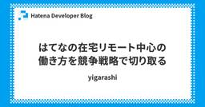
はてなの在宅リモート中心の働き方を競争戦略で切り取る 200
200
 Hatena Developer Blog
Hatena Developer Blog
こんにちは。コンテンツ本部 エンジニアリングマネージャーの id:yigarashi です。EMとして企業の働き方について考えを巡らせていたところ、勉強中の競争戦略との結びつきから示唆を得たので記事にまとめようと思います。 2020年の初頭から世界を襲った新型コロナウイルス感染症により、多くの企業がリモートワークへの移行を余儀なくされました。それから5年弱、感染症の脅威は相対的に小さくなりコロナ禍以前の生活を取り戻す動きが増えています。企業の働き方についても、リモートワークと出社勤務の両方を経験した上で、改めて両方の選択肢を検討できる時期と言えるでしょう。しかしながら、リモートワークと出社勤務…
2日前
技術書の執筆を支える技術 160 CADDi Tech Blog
CADDi Tech Blog
IDチームの小森です。 CADDi プロダクトチーム Advent Calendar 2024の18日目の記事になります。 いよいよ年の瀬ですが、皆さんは年初に立てた目標などを達成できましたでしょうか。 私はずぼらなので年初の目標など立てたことはないのですが、今年ようやく5年越しの取り組みに一区切りをつけ、誓いを果たすことができました。 私事ですが、人生3冊目の著書『[改訂新版] プロになるためのWeb技術入門』を2024年11月28日に刊行しました。 おかげさまで好評をいただいております。 本エントリーでは、技術書執筆の技術的な側面について、私が取り組んできたことを紹介したいと思います。 技…
2日前

クレジットカードの不正検知システムを3日で設計し、3週間で本番リリースした話 - LLMで加速するソフトウェア開発 220 LayerX エンジニアブログ
LayerX エンジニアブログ
はじめに 背景：クレジットカード不正検知システムとは 3日でDesign Doc 2本、ADR 5本を執筆 3週間で開発し、本番環境にリリース LLM活用による効率化のポイント 目的・要件の整理 要件を満たす技術的オプションの洗い出し・技術調査 PoC実装 ドキュメントの執筆・技術選定 本実装 学び おわりに はじめに 新規プロダクトやプロジェクトの立ち上げにおいて、どれだけ意思決定を明確化し、設計を固めることができるかは、後々の開発効率や品質に大きな影響を与えます。一方で、最初が肝心だからといって調査や設計に何か月も費やす余裕は、多くの企業にはありません。できる限り早く設計を確立し、実装を開…
2日前
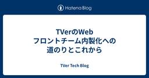
TVerのWebフロントチーム内製化への道のりとこれから 107 TVer Tech Blog
TVer Tech Blog
TVer で Web フロントエンドエンジニアをしている永井です。 この記事は TVer アドベントカレンダー 2024 19 日目の記事です。 18 日目の記事は @k0bya4 さんによる 「Atlasを使った宣言的マイグレーションでDBスキーママイグレーションを自動化する」 でした。 19 日目の記事では、Web フロントエンドチームの内製化について紹介します。 ※ TVer の Web フロントエンドは、広告プロダクトである「TVer 広告」の配信システム・広告周辺領域の開発を行うチームと、tver.jp といったユーザー向けのプロダクトを開発するチームの 2 つあり、今回の話は後者に…
1日前
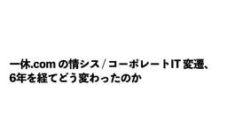
一休.com の情シス / コーポレートIT 変遷、6年を経てどう変わったのか 235 一休.com Developers Blog
一休.com Developers Blog
はじめに id:rotom です。社内情報システム部 兼 CISO室 所属で ITとセキュリティを何でもやります。 このエントリは 一休.com Advent Calendar 2024 16日目の記事です。昨日は id:naoya による TypeScript の Discriminated Union と Haskell の代数的データ型 でした。その他の素敵なエントリも以下のリンクからご覧ください。 qiita.com 2018年のアドベントカレンダーにて「一休における情シスの取り組み」を紹介させていただき、一定の反響をいただくことができました。 早いものであれからすでに6年が経過しまし…
4日前
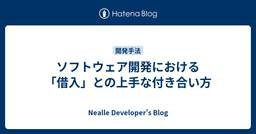
ソフトウェア開発における「借入」との上手な付き合い方 118 Nealle Developer's Blog
Nealle Developer's Blog
こんにちは！ニーリーアドベントカレンダー2024 18日目は ARCHチームの野呂が、借入についての記事をお届けします！ ここだけの話なのですが、我が家のリビングのドアのドアノブが失われてそろそろ1ヶ月経ちます。 リビングのドアにドアノブがないと非常に不便です。 ちゃんと閉まらないのでエアコンの暖気がだだ漏れになりますし、猫が脱走して大暴れします。 皆様におかれましても、リビングのドアノブを持ち去られそうになった場合、勇気を持ってNoを言った方が良い結果を生むことが多いのではないかと思います。 相手がプロで、自分が素人であってもです。 参考になりましたら幸いです。 さて、ここからが本題なのです…
2日前
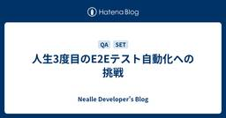
人生3度目のE2Eテスト自動化への挑戦 68 Nealle Developer's Blog
この記事はニーリーアドベントカレンダー2024の19日目 その1の記事です。 こんにちは、ニーリーでQA/SETをしている宮内です。 今年の10月に入社し、現在3ヶ月目になります。 アドベントカレンダーに何を書こうか迷いましたが、入社後の最初のメインタスクであるE2Eテスト自動化について携わるのが人生で3回目となるので、過去の経験を振り返りながら意気込みを書きたいと思います！ 自己紹介 私は新卒から11年間IT業界で働いており、8年間は開発エンジニア、その後3年間はQAエンジニアとして活動してきました。なぜ開発からQAへ転身したのかについては、また別の機会にお話します（入社エントリーより先にア…
1日前
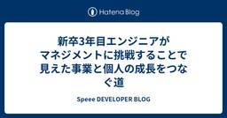
新卒3年目エンジニアがマネジメントに挑戦することで見えた事業と個人の成長をつなぐ道 38 Speee DEVELOPER BLOG
Speee DEVELOPER BLOG
不動産DX事業部でエンジニアをしている 22 新卒の高島（@takatea_dayo）です。本ブログでは新卒 3 年目エンジニアが実際にマネジメントに挑戦して直面した課題と、それを通じて得た重要な学びをまとめます。特に、事業成果と個人の成長を結びつけるられたことなどにも触れながら、この半年を振り返ります。将来エンジニアとしてマネジメントにも挑戦したいと考えている方に少しでも参考になれば嬉しいです。
16時間前
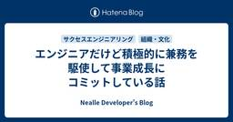
エンジニアだけど積極的に兼務を駆使して事業成長にコミットしている話 98 Nealle Developer's Blog
この記事はニーリーアドベントカレンダー2024の18日目 その2の記事です。 こんにちは。サクセスエンジニアリングチームの中村です。 気づけば今年もあとわずかになってきましたね。我が家では「年末だからいいよね」が合言葉になっており、食生活がものすごく崩れます。今年こそはランニングで体型維持するんだ、、とビールを飲みながら、、 この記事ではサクセスエンジニアリングという組織に所属しながら、エンジニアリングとは違うことをしている話をしたいと思います。兼務が多いことはアンチパターンといわれることもありますが、実際にやってみたら、主務に大きな影響があったり、事業成長によりコミットできたので紹介したいと…
2日前
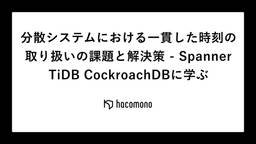
分散システムにおける一貫した時刻の取り扱いの課題と解決策 - Spanner TiDB CockroachDBに学ぶ 91 hacomono TECH BLOG
hacomono TECH BLOG
この記事は hacomono advent calendar 2024 の18日目の記事です 今年9月にhacomonoにJOINし、基盤本部というところで今後のhacomonoのアーキテクチャ設計をしている @bootjp と申します。分散システムが好きです。 hacomonoも昨今のWebサービスの例にもれず、分散システム化しています。 そしてより高い可用性と低い運用コストを目指して新たなアーキテクチャの検討をしています。 今回はその取り組みのなかで、分散システムに関わる難しさというテーマで一貫した時刻の取り扱いの話で記事を書きます。 はじめに 昨今のWebをはじめとしたサービスは一つのサ…
2日前
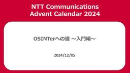
OSINTerへの道 ～入門編～ 49 NTT Communications Engineers' Blog
NTT Communications Engineers' Blog
この記事は、 NTT Communications Advent Calendar 2024 の記事です。 この記事では、OSINT（Open Source Intelligence）の基本的な考え方と、分析の際に重要となる認知バイアスへの対処方法について解説していきます。 また、実際の分析で使われる競合仮説分析（ACH: Analysis of Competing Hypotheses）という手法についても紹介します。 はじめに OSINTとは Intelligenceとは 本記事の目的 OSINTを成功させるためのマインドセット OSINTの特徴 マインドセットの基本原則 認知バイアスとは…
1日前
IIJのFY2024 新卒の自宅 / 業務環境紹介 Part 1 46 IIJ Engineers Blog
IIJ Engineers Blog
【IIJ 2024 TECHアドベントカレンダー 12/18の記事です】 はじめまして、小椋といいます。今年度 (2024年) に入社し、IIJ のクラウドサービス「IIJ GIO」の基盤周りを担当し...
2日前
歴史を感じつつ、クロージャで遊んでみた（JavaScript編） 26 iimon TECH BLOG
iimon TECH BLOG
こんにちは！株式会社ｉｉｍｏｎでフロントエンジニアをしている「ひが」です！ 本記事はアドベントカレンダー19日目の記事になります！ 先日夢で「メリークロージャマス！！！」と叫んでスベる夢を見ました。 冬だからか、みなさん冷たかったです（現実では暖かいです） そのようなこともあり、思い切って記事にしてみようと思いました！ どうか、暖かい目で見守っていただけると嬉しく思います！！ 本題 本題ですが、みなさんはクロージャをご存知でしょうか。 MDNよりお言葉を借りると クロージャは、組み合わされた（囲まれた）関数と、その周囲の状態（レキシカル環境）への参照の組み合わせ です！ 初見だと何言ってるかよ…
1日前
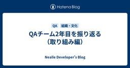
QAチーム2年目を振り返る（取り組み編）
31 Nealle Developer's Blog
この記事はニーリーアドベントカレンダー2024の19日目 その2の記事です。 こんにちは、QAチームの関井（@ysekii_）です。 先日書いたQAチーム2年目を振り返る（体制編）の続きで、今回は2024年にQAチームとして取り組んだことを振り返りたいと思います。 ちなみに、今年取り組んだ内容は「これってQAがやることなの？」と思われるかもしれませんが、そのあたりは大目に見ていただけると幸いです😉 開発チームへの問い合わせの窓口設置 まず、今年の初めから取り組んだことは、開発チームへの問い合わせの窓口設置になります。 ニーリーではPark Directを利用いただいている不動産管理会社様や駐車…
1日前
【VSCode】 マルチカーソル、使ってますか？ 227 Hacobell Developers Blogのフィード
Hacobell Developers Blogのフィード
この記事は「めぐろLT Advent Calendar 2024」ー 16日目の記事です。マルチカーソル機能は、複数のカーソルを使って同時に編集を行うことができる機能です。VSCodeには、このマルチカーソル機能が標準で搭載されており、効率的なコーディングをサポートしてくれます。マルチカーソルを使用している様子本記事では、マルチカーソル機能の使い方と、筆者が実際にどのような場面で使用しているかを紹介します。 マルチカーソル機能の使い方VSCodeでは以下の方法でマルチカーソルを作成することができます。マルチカーソルの作成方法Mac版のショートカットWindow...
4日前
マルチプロダクト開発の現場でAWS Security Hubを1年以上運用して得た教訓やあれこれ 28 ANDPAD Tech Blog
ANDPAD Tech Blog
こんにちは。SREチームの吉澤です。年末はイベントが多かった関係でネタがあったので、ANDPAD Advent Calendar 2024の6日目に続き、19日目も私が担当します。 先日12/13(金)に、Findy社のオンラインイベント「クラウドセキュリティを再吟味するために〜実例から学ぶ、考慮すべき観点とその対策事例〜」にお呼びいただき、AWS Security Hubの運用について講演しました。 今回はこの講演の内容と、10分の講演時間内には話しきれなかったリアルなあれこれをご紹介します。 講演：マルチプロダクト開発の現場でAWS Security Hubを1年以上運用して得た教訓 AW…
1日前
新卒２年目の私が素敵な設計で素敵な仕様変更に巡り会えた件 27 Tabelog Tech Blog
Tabelog Tech Blog
はじめに この記事は 食べログアドベントカレンダー2024 の19日目の記事です🎅🎄 こんにちは。食べログ開発本部 ウェブ開発1部の相馬です。新卒で入社してから今年で2年目になります。 入社してチームに配属されてからは、システムの細かい改修や問い合わせがあった機能の調査をしていました。ここ最近、システムの移行作業やPoC用のテスト画面の作成といった、配属直後よりも規模が少し大きい案件を担当するようになりました。 そのような状況で、私自身の課題として浮き彫りになったのが「設計」です。設計は、エンジニアとして活躍するために必要なスキルの1つであることは皆さんもご存じでしょう。この記事では、設計の重…
1日前
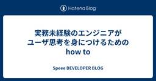
実務未経験のエンジニアがユーザ思考を身につけるためのhow to 45 Speee DEVELOPER BLOG
※この記事は、2024 Speee Advent Calendar17日目の記事です。 昨日の記事はこちら tech.speee.jp はじめに こんにちは。24卒エンジニアの木下です。 学生時代は個人開発や友達と高専プロコンなどのハッカソンに参加しており、実務経験などは特にない状態でSpeeeに入社しました。 現在はイエウールという不動産売却の一括査定サービスの開発をしております。 この記事では、個人開発・ハッカソンなどの開発経験しかなかった自分が入社して、自分自身の課題の解像度が上がった話を書ければと思っています。 実務経験がなく、業務のイメージがつかない学生さんに読んでいただけると幸いで…
3日前

知らないと危険！Cookieのセキュリティリスクと対策 25 GMO Developers
GMO Developers
はじめに 今回この記事を書こうと思った経緯としては、最近の業務でCookieについて理解を深める機会がありそれを共有しようと思ったからです。Cookieは普段あまり意識することなく使用していますが、適切な設定を行わなけれ […]
1日前
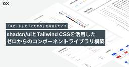
「スピード」と「こだわり」を両立したい！shadcn/uiとTailwind CSSを活用したゼロからのコンポーネントライブラリ構築 42
 10X Product Blog
10X Product Blog
こんにちは、10X プロダクトデザイナーの日比谷（@suuminbot）です。 現在10Xでは新規プロダクトを複数開発している真っ只中ですが、私もその一環でshadcn/uiとTailwind CSSを活用しつつ、SaaSのサービス画面（管理画面）用のコンポーネントライブラリをゼロから構築していました。 少し前に一通り最低限必要なコンポーネントをFigma・実装ともに作りきり、現在は実際にそのコンポーネントライブラリを使って自分自身が複数のプロダクトのUIを作ったり、開発が進んでいる様子を見ているところです。 このブログでは、今回取り組んだことや学びをご紹介していこうと思います。 新規構築の経…
3日前

BigQueryエミュレータを使ったETLのインテグレーションテスト 24 MonotaRO Tech Blog
MonotaRO Tech Blog
TL;DR BigQuery Emulator と fake-gcs-server を組み合わせることでbqコマンドでCSVファイルを読み込んでETLのインテグレーションテストができた。 はじめに こんにちは。先日こちらの記事を書いたCTO-Officeの藤本です。そこでは書ききれなかったETLについて書いておきたいと思います。 ビッグデータを扱うETLのテストを行いたい場合に、DBからExtractするEの部分など、ユニットテストやモックでは担保できないところが出てきます。 そのようなインテグレーションテストに、OSSのBigQuery Emulatorを活用できる場合があります。 背景 モ…
1日前
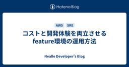
コストと開発体験を両立させるfeature環境の運用方法 15 Nealle Developer's Blog
この記事はニーリーアドベントカレンダー2024の20日目 その1の記事です。 こんにちは、SREチームの森原です。 今回はニーリーのfeature環境の管理方法について紹介していきたいと思います。 feature環境 feature環境とは、新しい機能やバグ修正を検証するために作業用ブランチを、インフラにデプロイしたものを指します。ニーリーではこのfeature環境の管理をPRのラベルで行っています。ラベルで管理することで以下のような利点があります。 特定のPRのみに対して簡単にfeature環境が作成・削除できる PRのラベルとライフサイクルに紐づいているのでfeature環境の立ち上げっぱ…
1時間前
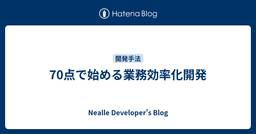
70点で始める業務効率化開発 14 Nealle Developer's Blog
この記事はニーリーアドベントカレンダー2024の20日目 シリーズ2の記事となります。 こんにちは。グロース開発チームのエンジニアの西村です。 この記事では、事業成長に伴い増大しているオペレーションの効率化を目指した開発の一例について紹介しようと思います。 ニーリーでは、月極駐車場のオンライン契約サービスであるPark Direct(パークダイレクト)を展開しています。 パークダイレクトでは、ソフトウェアとオペレーションを組み合わせることで、管理会社様や借主様に価値を提供しています。そのため、パークダイレクトの機能は管理会社様や借主様だけでなく、オペレーションを行うニーリーの従業員も利用してい…
1時間前
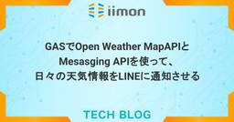
GASでOpen Weather MapAPIとMesasging APIを使って、日々の天気情報をLINEに通知させる 33 iimon TECH BLOG
はじめに・やりたいこと APIを利用するにあたっての準備 Messaging APIの設定準備 OpenWeatherMapAPIの設定準備 GASでスクリプトを組む まとめ 参考 こんにちは！ ｉｉｍｏｎでフロントエンドエンジニアを担当しているたくふぉんです！ だんだんとクリスマスが近づいてきましたね🎄🎅⭐️ 本記事はアドベントカレンダー17日目の記事になります。 はじめに・やりたいこと 世の中には無料で便利に使える様々なAPIが存在しますが、そんなAPIを自在に操ることができるエンジニア像に何とはなしに憧憬の念を抱いており（？）、APIを使って自分でも何かツールを作ってみたいと思っていまし…
3日前
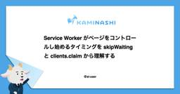
Service Worker がページをコントロールし始めるタイミングを skipWaiting と clients.claim から理解する 12 カミナシ エンジニアブログ
カミナシ エンジニアブログ
こんにちは。カミナシでソフトウェアエンジニアをしております佐藤です。 先日、『カミナシ レポート 記録アプリ（Web）』の提供を開始いたしました。 現場帳票システム『カミナシ レポート』、マルチデバイスで記録ができるWeb版をリリース PWA として利用が可能であり、また、ネットワークが不安定な現場での使用も想定したオフライン機能も備えています。これらを実現する上では、Service Worker が重要な役割を果たしています。 『カミナシ レポート 記録アプリ（Web）』の実装には、VitePWA を利用しています。VitePWA では Service Worker の制御に Workbox…
2時間前

駅メモ！フロントエンドの型チェックを強化してCI(GitHub Actions)を導入した話 19 Mobile Factory Tech Blog
Mobile Factory Tech Blog
こんにちは、駅メモ！開発チームエンジニアの id:hayayanai です！ 私が開発に関わる駅メモ！は、今年で 10 周年を迎えたゲームです。フロントエンドは Vue.js で開発されていて、現在もコード量が増加しています。 今回は、そんな駅メモ！のフロントエンドに vue-tsc を導入して、GitHub Actions で型チェックを実行し、reviewdog に Pull Request で指摘してもらえる状態を作った話を紹介します。 駅メモ！のフロントエンドの状態 はじめに駅メモ！のフロントエンドの簡単な概要を紹介します。 フレームワークは Angular → Vue 2 → Vue…
2日前
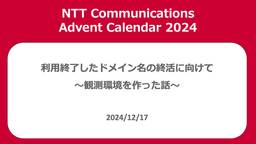
利用終了したドメイン名の終活に向けて 〜観測環境を作った話〜 64 NTT Communications Engineers' Blog
この記事は、 NTT Communications Advent Calendar 2024 17日目の記事です。 みなさんこんにちは、イノベーションセンターの平木です。 Network Analytics for Security1 (以下、NA4Sec)プロジェクトのメンバーとして活動しています。 この記事では、利用終了ドメイン名観測の環境構築の知見を共有していきます。 明日の記事では観測されたログの分析結果を紹介したいと思います。 利用終了ドメイン名観測分析施策の背景と目的 工夫した点 DNSクエリのみならずWebアクセスログも取得する パブリッククラウドとマネージドサービスを利用する …
3日前
プログラムを約3200倍高速化して、社内業務のボトルネックを解消したお話 149 Tabelog Tech Blog
はじめに この記事は 食べログアドベントカレンダー2024 の16日目の記事です🎄 こんにちは。食べログ開発本部ウェブ開発1部 システム運用改善チーム所属の @4palaceです。 今回は、私の所属するシステム運用改善チームで、とある社内業務の処理パフォーマンスを改善した事例を紹介します。 この事例では、10日間かかっていた処理を、少しの改修で10分未満に短縮しました。 改修量としては小さくとも、大きなパフォーマンス改善を実現でき、運用業務の効率化につながりました。 個人的に興味深い例でしたので、ここで共有させていただきます。 問題の発見 月次処理が月内に終わらない！ きっかけはカスタマーサポ…
4日前
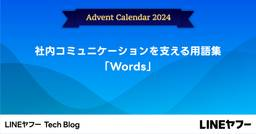
社内コミュニケーションを支える用語集「Words」 17LINEヤフー Tech Blog
LINEヤフー Advent Calendar 2024の記事です。こんにちは、LINEヤフー株式会社でテクニカルライターとして働いている古木です。私は、LINE Developersサイトの技...
2日前
CTOの1週間──技術、組織、そして仕組み化のサイクル 56
 CARTA TECH BLOG
CARTA TECH BLOG
この記事は CARTA TECH BLOG アドベントカレンダー2024 の 12/16 の記事です。 CTOのsuzukenです。 新卒面接も増え、「CARTAのCTOって普段何してるんですか」と面接で聞かれることも増える時期になりました。今日はCTOとしてエンジニア組織やテクノロジーに関連し、概ね週ごとにやっていることをゆるくまとめてみました。参考になれば幸いです。フィードバック・コメントもお待ちしてます！ 前提は以下のとおりです。 CARTA CTO = ホールディングスの全社CTOのこと。事業会社にはそれぞれCTOやテックリードが別にいます。 CTOのミッションを一言で表すと、テクノロ…
4日前
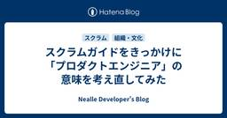
スクラムガイドをきっかけに「プロダクトエンジニア」の意味を考え直してみた 54 Nealle Developer's Blog
この記事はニーリーアドベントカレンダー2024の17日目 その1の記事です。 こんにちは、ニーリーのプロダクトエンジニアのりん（@TWBMT）です。 「いいや、限界だっ、買うね！！！」と心に決めてブラックフライデーに臨んだら欲しかったモニターが売り切れていました。悲しかったです。*1 最近、地元のスクラムコミュニティに参加した際に改めてスクラムガイドを読む機会がありました。 スクラムガイドには「プロダクト」という言葉の定義が書いてあり、その定義を基にすると「プロダクトエンジニアってこういうことなのかもな、普段使いしている「プロダクト」という言葉の解像度が上がって面白いな〜」と気づくことが多々あ…
3日前
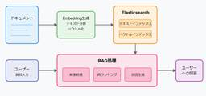
Elasticsearchのハイブリッド検索を用いて高精度なRAGを簡単に実現する 26 Taste of Tech Topics
Taste of Tech Topics
こんにちは。 Acroquestのデータサイエンスチーム「YAMALEX」に所属する@shin0higuchiです😊 YAMALEXチームでは、コンペティションへの参加や自社製品開発、技術研究などに日々取り組んでいます。 はじめに 近年、生成AIの発展により、RAG（Retrieval-Augmented Generation）が注目を集めています。RAGは既存の知識ベースから関連情報を検索し、それを基に生成AIが回答を生成する手法です。本記事では、多くの企業ですでに利用されているElasticsearchを使って、シンプルなRAGシステムを構築する方法をご紹介します。 RAGの基本概念 RA…
3日前
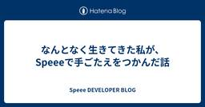
なんとなく生きてきた私が、Speeeで手ごたえをつかんだ話 14 Speee DEVELOPER BLOG
※この記事は、2024 Speee Advent Calendar18日目の記事です。 昨日の記事はこちら tech.speee.jp はじめに エンジニア新卒採用担当の伊藤です。2年前に、10年ぶり2回目の転職をしてSpeeeに入社しました。 初めての就職先を希望や不安や葛藤を抱えながら探している学生のみなさんと対峙している中で、「わかるわかる」と共感の日々を過ごしています。 学生のみなさんから出てくる葛藤に過去の自分を重ねながら振り返ってみようと思います。これを読んで「あ、案外大丈夫そうだな」と安心してもらえるとうれしいです。 はじめに 前職のはなし 肩書と中身の乖離にどんどん辛くなってい…
2日前
コピペってなんだろう？Clipboard編 47 サイボウズ フロントエンドのフィード
最近は専らwebのリッチテキストエディタの開発をしている@iricoです。そんな折にあることに気づいてしまいました。「コピペって奥が深い…！」ということで、コピペ、つまりcopy and pasteについて詳しく知ろうというのが今記事の目的です。ブラウザへのcopy and pasteは大まかな流れは以下です。①Excelなどの各アプリケーションデータや画像データをCtrl+Cでコピーし、②Ctrl+Vでブラウザにペーストし、③そのデータをアプリケーション側で取り扱うこれら全てを扱うと膨大になってしまうため、今記事ではOSのClipboardを中心に①について解説してい...
3日前
React SPA の環境設定をビルド後にデプロイ環境ごとに変える 22 Magic Moment Tech Blogさんのフィード
この記事は、Magic Moment Advent Calendar 2024 13 日目の記事です。こんにちは！Magic Moment でソフトウェアエンジニアをやっている Miyake です。今回は React アプリケーションのデプロイに関する内容を書かせていただきます。Tips 的な内容なので、気楽に読んでいただけたら幸いです。 前提: React アプリケーションにおける環境変数の扱い様々なフレームワークやビルドツールがある React ですが、基本的にローカル環境においては環境変数を用いてランタイムで設定や挙動を変えることができます。一方でデプロイ時 Rea...
2日前
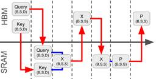
GPUで高速なモデル推論を実現するために考えること -FlashAttentionはなぜ高速か- 21 エムスリーテックブログ
エムスリーテックブログ
こちらはエムスリー Advent Calendar 2024 17日目の記事です。 AI・機械学習チームの髙橋です。チームでは先週からNeurIPS読み会が開催されており、"Deep Learning Architecture, Infrastructure"という深層学習のアーキテクチャに関するセッションを担当しました。その中でも興味深い一本として"You Only Cache Once: Decoder-Decoder Architectures for Language Models"という論文を勉強会まとめブログで紹介してます。 www.m3tech.blog この論文ではLLMの推論…
3日前
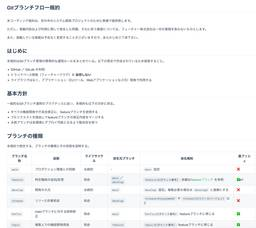
Gitブランチフロー規約の紹介 151 フューチャー技術ブログ
フューチャー技術ブログ
<p><a href="https://qiita.com/advent-calendar/2024/github">GitHub Advent Calendar 2024</a>の14日目の記事です。昨日はwa-chan222さんの<a
6日前
次のチャンスを掴むためのタスクへの向き合い方 40 Magic Moment Tech Blogさんのフィード
この記事は、Magic Moment Advent Calendar 2024 12日目の記事です。こんにちは！Magic Moment で Engineering Manager をやっている fujisaki です。私はマネージャーとして毎週メンバーと 1on1 を行っています。そのなかでメンバーの やりたいこと や なりたい姿 について話す機会が度々あり、自分なりの考え方を伝えたり、どうしていくと良いだろうかとメンバーと一緒に考えてきました。自身がメンバーに伝える言葉は、私自身のマネージャーやその上位の方からすると同じように見えているだろうと感じることも多々あり、ブーメ...
3日前
Cloud Run 関数でのFunctions Framework導入まとめ(TypeScript) 19GMOアドパートナーズ TECH BLOG byGMO
はじめに こんにちは。GMO NIKKO の KONCE です。今回は Cloud Run 関数について Functions Framework と TypeScript を導入する機会があったので方法と Cloud R
3日前
Android 15 QPR1 におけるMediaProjectionの変更点とMirrativの対応 17 Mirrativ Tech Blog
Mirrativ Tech Blog
こんにちは、Androidエンジニアの藤原です。 Android 15が配信されてから数ヶ月が経ちました。 Android ベータプログラムに参加しているとPixel端末にてQPR版のOSが入手できますが、そのAndroid 15 QPR1のバージョンでMirrativ Android版に影響のある変更があったので紹介します。 Android 15 QPR1での変更点とMirrativへの影響 developer.android.com 公式にも記載されていますが、アプリ内で画面共有を行っている際に、ステータスバーに画面共有中であることを示すチップが表示されるようになります。 画面共有中である…
3日前
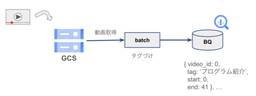
インターンではじめてのプロダクト開発を経験した話【ソフトウェアエンジニアインターン参戦記】 6 エムスリーテックブログ
はじめに 11月末から2週間、エンジニアリンググループ AI・機械学習チームでの新卒ソフトウェアエンジニアインターンに参加した山口 (@chimaki_yama821)です。この記事では私が取り組んだことと2週間の感想について書いたので、エムスリーが気になっているという他の学生の参考になれば幸いです。 最終日に撮ってもらった写真
17時間前

Google SheetsからSnowflakeのデータを取得するアドオンの開発について 6 LayerX エンジニアブログ
こんにちは！バクラク事業部 機械学習・データ部 データチームの@TrsNiumです。 私たちのデータ分析環境では、Google Sheetsを手軽な分析ツールとして活用しています。Google Sheetsでは、マーケットプレースのアドオンを利用して外部データを取得できます。ただし、マーケットプレースにはSnowflakeからデータを取得するアドオンが存在しないため、独自にアドオンを開発しました。本記事では、Google App Scripts（以降GASと略称）を使用したアドオンの開発方法と、Snowflakeからデータを取得する具体的な実装について解説します。 開発したアドオンの紹介 アド…
1日前
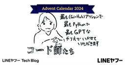
LINEのアプリ開発を支えるコードオーナー管理 16LINEヤフー Tech Blog
LINEヤフー Advent Calendar 2024の記事です。はじめにこんにちは、iOSアプリエンジニアの羽柴です。本記事では、LINEの膨大なソースコードを扱う上で欠かせない「コードオ...
3日前
GitHubからエンジニアスキルを可視化する「スキル偏差値」を大幅リニューアルした話 30 Findy Tech Blog
Findy Tech Blog
こんにちは。 FindyでMLエンジニアをしているyusukeshimpo(@WebY76755963)です。 今回は直近で公開した「スキル偏差値ver.3」機能について、その内容や具体的な機械学習モデルの作成方法について紹介します。 Findyのスキル偏差値とは？ スキル偏差値の概要 アップデートすることになった背景 スキルの見える化する、スキル偏差値ver.3の詳細 1.学習データの作成 1-1.使用言語ごとのデータ準備 1-2.ペアワイズ形式のデータ構築 1-3.勝敗アノテーションの付与 2.ランキング学習 2-1.ペアワイズデータの特徴量生成 2-2.機械学習モデルによる勝敗予測 3.…
4日前
gitレポジトリ考古学に使う道具 105 エムスリーテックブログ
こちらはエムスリーAdvent Calendar 2024 13日目の記事です。 こんにちは、エムスリーエンジニアリンググループの福林 (@fukubaya) です。 今回は、長年運用されてきたレポジトリをgitを使って発掘する上で使っている道具を紹介します。 福岡タワー（ふくおかタワー）は、福岡県福岡市早良区のシーサイドももち地区にあるランドマークタワー（電波塔）。本文には関係ありません。 帳票環境 レポジトリからDBテーブルの使用箇所を探す スケジュール設定だけ消される gitレポジトリ考古学 ファイルが消えたコミットを知りたい ある記述が消えた(追加された)コミットを知りたい あるテーブ…
7日前
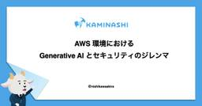
AWS 環境における Generative AI とセキュリティのジレンマ 28 カミナシ エンジニアブログ
どうもセキュリティエンジニアリングの西川です。 寒いのは好きではないのですが、寒くなってくると猫が布団に入ってくるので最高です。 ラスベガスで開催された AWS re:Invent 2024 に参加していました。 その中でも Generative AI を利用したセキュリティ対策やその他もろもろ便利機能が共有されていました。 これは当然と言えば当然で、セキュリティエンジニアは市場に少ないですし、セキュリティエンジニアの中でもスキルが十分に足りていないといったことも考えられ、それを補うためにGenerative AI を使いましょうという流れは自然だと思います。 セキュリティへの Generat…
3日前
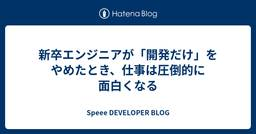
新卒エンジニアが「開発だけ」をやめたとき、仕事は圧倒的に面白くなる 104 Speee DEVELOPER BLOG
※この記事は、2024 Speee Advent Calendar14日目の記事です。 昨日の記事はこちら tech.speee.jp はじめに こんにちは！2023卒で入社し、今はイエウールという自社サービスのWebサービスの開発をしている、木俣と申します。周囲からはきまっちゃんと呼ばれています！この記事が、「Speeeのエンジニアになると「開発」の他になにができるようになるか」知りたい方に届くと嬉しいです。 突然ですが、Speeeでは、働くうえでの指針となる15のカルチャーが存在しています。 Speee Style - 株式会社Speee これは、Speeeメンバーが持つ共通の価値観であり…
6日前

請求代行を利用していても大丈夫。AWS Organizationsの始め方！！のWebinarを開催します。 27 Technology - NRIネットコムBlog
Technology - NRIネットコムBlog
こんにちは、佐々木です。 直前のブログ告知で恐縮なのですが、明日（2024/12/18）の12時にWebinarで登壇します。 テーマはマルチアカウント管理の始め方ということで、AWS Organizationsを導入したいけど様々な制約で困っている人向けです。 解決したい問題 解決したい問題は、ズバリこれです。 AWSのアカウントが、自社や請求代行、あるいはシステムを構築したシステムインテグレーターなど管理主体がバラバラのケースです。 これまで、AWS Organizationsに関するセミナーを多数開催してきました。その中で頂いたフィードバックとして多いのが、「うちは請求代行をつかっている…
3日前
MySQLで全文検索機能を試したら実行速度が遅かったので調査してみた 61 iimon TECH BLOG
◼️ はじめに ◼️ 前提条件 マシン環境 データベースについて ◼️ データ挿入に関して ◼️ 100万レコードでLIKE検索(前後の部分一致)と全文検索の比較 LIKE検索 全文検索 ◼️ EXPLAINで実行計画を確認 LIKE検索のEXPLAIN結果 全文検索のEXPLAIN結果 ◼️ EXPLAIN ANALYZEを確認 LIKE検索のEXPLAIN ANALYZE結果 全文検索のEXPLAIN ANALYZE結果 ◼️ リソース使用状況確認 全文検索のクエリのプロファイリングを確認 ◼️ INNODB_FT_INDEX_TABLEを確認 ◼️ テストデータを修正 最初に作成したレコ…
4日前
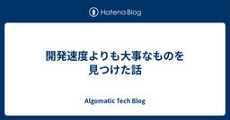
開発速度よりも大事なものを見つけた話 61 Algomatic Tech Blog
Algomatic Tech Blog
こんにちは、シゴラクAIカンパニーCTOの菊池 (@_pochi) です。 この記事は、Algomatic アドベントカレンダー2024の15日目の記事です。 algomatic.jp シゴラクAIカンパニーでは、「シゴラクAI」という法人向け生成AI活用プラットフォームの開発運用に加えて、新たな事業領域でのチャレンジを進めています。 新規事業立ち上げという、最大限に不確実性が大きい事業フェーズ において、エンジニアリングによって事業価値向上に最大限寄与するにはどうしたらいいか？を試行錯誤してきました。 本記事では、そんな試行錯誤の過程である、現在のシゴラクAIカンパニーの開発スタイルについて…
5日前
東京Ruby会議12運営おしょうゆ＆なっちゃんインタビュー ── 【前編】下見もせずに会場予約、見切り発車で動き出す 13 SmartHR Tech Blog
SmartHR Tech Blog
2025年1月18日に、東京Ruby会議12が開催されます。2016年以来の約9年ぶりの開催です。SmartHRは、東京Ruby会議12に協賛します。そこで、東京Ruby会議12を最大限に楽しんでいただくべく、実行委員長のおしょうゆさん（@osyoyu）と副実行委員長のなっちゃんさん（@pndcat）にお話をうかがいました。 前後編に分かれており、前編は主に地域Ruby会議の歴史や今回の開催のきっかけについて、後編は主に今回の見どころについてのお話です。 （インタビューは2024年11月13日に行いました。内容は当時のものです） regional.rubykaigi.org 目次 目次 自己紹…
3日前
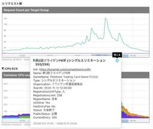
Mackerelのグラフアノテーションの効果的な使い方の例 12 KAYAC Engineers' Blog
KAYAC Engineers' Blog
この記事では、Tonamelの事例を通じて、Mackerelのグラフアノテーション機能を活用してサービスの負荷を可視化する方法を紹介しています。大会開催期間中の負荷ピークを一目で把握できるようになり、運用がより便利になりました。イベント型サービスを運営している方に参考になる内容です。詳細は記事をご覧ください！
3日前
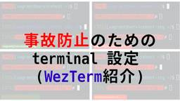
事故防止のためのターミナル設定 53 IIJ Engineers Blog
【IIJ 2024 TECHアドベントカレンダー 12/15の記事です】 はじめに こんにちは。IIJでメールサービスの運用に従事している芹澤です。 IIJ Engineers Blogでは「運用」を...
4日前
Amazon Bedrock Knowledge Baseのクエリフィルター自動生成で検索の精度を向上させる 22 Taste of Tech Topics
こんにちは、機械学習チーム YAMALEX の駿です。 YAMALEX は Acroquest 社内で発足した、会社の未来の技術を創る、機械学習がメインテーマのデータサイエンスチームです。 （詳細はリンク先をご覧ください。） この記事は Amazon Bedrock Advent Calendar 2024 17日目の投稿です。 re:Invent2024 ではたくさんの新機能が発表されて、あんなこともできるようになった、こんなことも……と興奮が止まらない日々です。 今回はそんなre:Inventで発表されたAmazon Bedrock Knowledge Baseの新機能の一つである、クエリ…
3日前
TROCCO & BigQueryテーブルメタデータで手軽にデータ取り込みの正常性をチェックする 22 Nealle Developer's Blog
本記事はニーリーアドベントカレンダー2024の17日目の記事 その2 です。 はじめに こんにちは。Analyticsチームの上田です。今回は小ネタとして、Park Directのデータ基盤ではどのようにデータ取り込みの正常性をチェックしているか？をご紹介します。 手軽さ (仕組みの単純さ・メンテナンスのしやすさ) を重視した方法ですので、少人数 (1~3名) で小~中規模のデータ基盤を運用している方の参考になるかもしれません。 データ取り込みの正常性チェック Park Directのデータ基盤では、TROCCO等を利用して各データソースのデータをBigQueryに日次で取り込んでいます。 デ…
3日前

swift-transformers で LLM を動かしてみた 11 ABEJA Tech Blog
ABEJA Tech Blog
ABEJA でエンジニアをしている石川です。これは ABEJA アドベントカレンダー 2024 の 18 日目の記事です。 CoreML で機械学習モデルを動かす swift-transformers を試す Mistral 7B モデルを動かす swift-transformers で推論を実装する Python で動かしてみる CoreML モデルに変換 Swift で動かす パフォーマンス We Are Hiring! macOS/iOS で機械学習モデルを動かすにはいくつかの方法がありますが、Apple シリコンの能力を十分に引き出すためには CoreML を使うのが最適です。 Pyt…
2日前
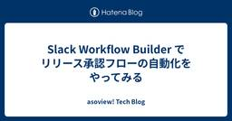
Slack Workflow Builder でリリース承認フローの自動化をやってみる 4 asoview! Tech Blog
asoview! Tech Blog
こちらの記事は、アソビュー！ Advent Calendar 2024の19日目（裏面）です。 はじめに 現状の課題 なぜ Slack Workflow Builder を使ったのか？ Slack Workflow Builder を使った「リリース承認ワークフロー」の作成 リリース承認依頼ボタンの作成 依頼フォームの作成 スレッドに承認依頼の内容を投稿 承認ボタン ボタンの注意点 リストへの追加 チェックボックスの内容をリストのチェックボックスに反映する 承認連絡 日次テストの依頼 未承認リスト まとめ 良かった点 惜しい点 最後に はじめに こんにちは！アソビューでエンジニアをしている白井…
1日前

大規模チームのミーティング時間を大幅に削減したことと、これからやっていきたいこと 46 KAKEHASHI Tech Blog
KAKEHASHI Tech Blog
こちらの記事は カケハシ Advent Calendar 2024 の 16日目の記事になります。 adventar.org こんにちは！エンジニアリングマネージャー（以下、EM）の小田中（@dora_e_m）です。11月より、新規プロダクト開発を主なミッションとするチーム"yabusame"に加え、Musubi AI在庫管理を開発するチーム"hakari"のEMを担当しています。 この記事では、hakariチームにジョインしてから取り組んだミーティング削減施策の狙い、実施までの進め方、効果、そしてこれからやっていきたいことについて紹介します。 hakariのチーム構成 まず、ミーティング削減…
4日前
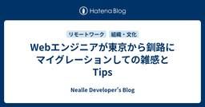
Webエンジニアが東京から釧路にマイグレーションしての雑感とTips 45 Nealle Developer's Blog
この記事はニーリーアドベントカレンダー2024の16日目の記事 その2です。 こんにちは、ニーリーの佐古です。 現在私は北海道釧路市から業務を行っていますが、2023年春までは東京に住んでいました。 今回は広義の開発環境系の話としての一定番、移住に関して書きたいと思います。 ただストーリーを仕立てる能力と意思を欠いているので、 東京から釧路に エンジニアが 一人で 移住することを検討するにあたっての魅力/留意点、 および、もう少し一般的な移住に当たってのTipsを主観でまとめました。 魅力 一般的な魅力については以下に譲ります。 www.city.kushiro.lg.jp 気候 "通年"冷涼…
4日前
Argilla を使って生成 AI の出力クオリティ向上を目指す！ 18 Techtouch Developers Blog
Techtouch Developers Blog
AI 出力改善の一環として、人間による評価をワークフローに組み込むために Argilla を導入した背景や、具体的な機能などについて紹介します。
3日前
入社エントリ〜転職半年の目から見た Insight Edge〜 9 Insight Edge Tech Blog
Insight Edge Tech Blog
はじめに はじめまして、5月に入社したデータサイエンティストの白井です！ 入社して半年ほど経ち、会社や仕事のことが少しずつ見えてきたこのタイミングで、改めて転職時の思いの振り返りと、実際働いてみた上でのInsight Edgeについて、書いてみようと思います。 Insight Edgeでは”入社エントリ”という形で記事を作るのは初めての試みなので、少し緊張していますが、張り切っていきます！ こんな方に見ていただきたい Insight Edgeに興味がある人 総合商社✖️DXが気になる人 自己紹介 まずは簡単に自己紹介をします。 1社目：独立系システムインテグレーター 基幹系システムの開発を担当…
2日前
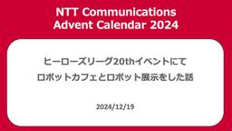
ヒーローズリーグ20thイベントにてロボットカフェとロボット展示をした話 5
NTT Communications Engineers' Blog
この記事は、 NTT Communications Advent Calendar 2024 及び ProtoPedia Advent Calendar 2024 の19日目の記事です。 こんにちは、AIロボット部（社内サークル）部員の宮岸(@daiking1756)です。 普段は5GI部で映像系商材のプリセールス的なお仕事をしています。 最近急に寒くなってきましたが、昨年から使い始めたアームウォーマーによって、タイピングに影響することなく腕を温めながら生活しています。 部屋全体を温めると頭がボーっとして眠くなるので、暖房は弱めに設定するのが好みなのです。 電熱線などが入っているものもあります…
1日前
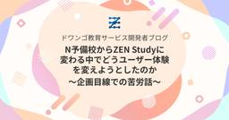
N予備校からZEN Studyに変わる中でどうユーザー体験を変えようとしたのか〜企画目線での苦労話 5 ドワンゴ教育サービス開発者ブログ
ドワンゴ教育サービス開発者ブログ
こんにちは、ZEN Study 企画チームの井手です。 2024年8月28日に、ドワンゴが提供しているオンライン学習システム「N予備校」は「ZEN Study」に生まれ変わり、ホーム画面を中心に見た目も機能もリニューアルしました！ 私は今回そのホーム画面の企画をメインで担当させていただきました。 ここでは、企画・デザインの観点から、なぜ名称を変更したのか、どんなユーザー体験を目指したのか、そこに至るまでの苦労話などができればと思います。 ※フロントエンド開発の視点からの関連記事もあります。 名称変更の背景 N予備校は2016年の誕生時、高校生をメインターゲットにしていました。しかしその後、中高…
2日前
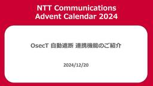
OsecT 自動遮断 連携機能のご紹介 3 NTT Communications Engineers' Blog
この記事は、NTTコミュニケーションズ Advent Calendar 2024 20日目の記事です。 国産OT-IDSであるOsecTの新機能、自動遮断機能についてご紹介します。 はじめに OsecTとは OsecTの役割 AMF-SEC連携機能の概要 不審な通信を検知した場合の自動遮断の流れ 開発の背景と今後の展望 アライドテレシス社との協業について おわりに はじめに こんにちは、イノベーションセンターの石禾（GitHub：rhisawa）です。 このたび、OsecTの新機能として、自動遮断機能を2024年12月にリリースします。今回はこの自動遮断機能と、NTT Comとアライドテレシス…
38分前
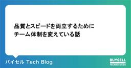
品質とスピードを両立するためにチーム体制を変えている話 3 バイセル Tech Blog
バイセル Tech Blog
はじめに こちらは バイセルテクノロジーズ Advent Calendar 2024 の19日目の記事です。 昨日は本田さんによる運用工数を抑えつつ安定稼働を実現するための工夫でした。 こんにちは。テクノロジー戦略本部開発1部でフロントエンドリードエンジニアをしている辻岡です。 私たちのチームは、もともとスクラムを用いて開発をしていました。しかし、プロジェクトのデリバリーを優先する必要が生じたため、開発体制を見直すことになりました。本記事では、開発スピードを向上させるための新しい体制への移行プロセスと、その過程での懸念、そしてそれらに対する対策について詳しく解説します。 はじめに スクラムを導…
16時間前
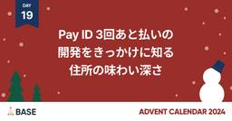
Pay ID 3回あと払いの開発をきっかけに知る住所の味わい深さ 3 BASEプロダクトチームブログ
BASEプロダクトチームブログ
本記事はBASEアドベントカレンダー2024の19日目の記事です。 はじめに こんにちは、Pay IDのエンジニアの金子です。普段は「Pay ID あと払い」の決済サービスのバックエンドを中心に開発を担当しています。 10月末に「Pay ID 3回あと払い」の機能をリリースしました。「Pay ID 翌月あと払い」に続き、新たな決済手段として使用可能になっています。 今回は、Pay ID 3回あと払い機能の実装をきっかけに住所の深さを知ることになったので、それについて話せればと思います。 Pay ID 3回あと払いとは 「Pay ID 3回あと払い」とは、Pay IDアカウントでのお買いものを、…
1日前
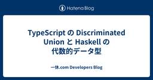
TypeScript の Discriminated Union と Haskell の代数的データ型 58 一休.com Developers Blog
この記事は 一休.com Advent Calendar 2024 の15日目の記事です。 予定より早く書き上げてしまったので、フライングですが公開してしまいます。 TypeScript の Discriminated Union (判別可能な Union 型) を使うと、いわゆる「代数的データ型」のユースケースを模倣することができます。一休のような予約システム開発においては「ありえない状態を表現しない」方針で型を宣言するためによく利用されています。 「あり得ない状態を表現しない」という型宣言の方針については以下の URL が参考になります。 Designing with types: Mak…
7日前
おれの採用広報戦略は半分足りてなかった 35 ANDPAD Tech Blog
こんにちは、 id:sezemi です。 先日いよいよ 40 代最後の年が始まったのですが、 2 週間前の RWC 2024 で懇親した際、なぜか 50 歳と逆サバの年齢を言ってしまい、ナチュラルに数え間違えました。 そういうことがあるのですよ。 まぁ、 hsbt からは「 50 になろうが 60 になろうが、 40 代以上という同じ括りなんで大丈夫ですよ」と話してもらえたので、勇気凛々です。 というわけで、この記事は ANDPAD Advent Calendar 2024 と 技術広報 Advent Calendar 2024 の 16 日目の記事です。 そして、今日は「おれの採用広報戦略は…
4日前
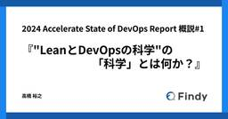
2024 Accelerate State of DevOps Report 概説#1 『"LeanとDevOpsの科学"の「科学」とは何か？』 14 Findy Tech Blog
こんにちは。ソフトウェアプロセス改善コーチでFindy Tech Blog編集長の高橋（@Taka_bow）です。 2024年10月23日、2024 DORA Accelerate State of DevOps Report、通称DORA Reportが公開されました。 2024 DORA Accelerate State of DevOps Report 表紙 このレポートは、ソフトウェア開発における運用と実践について、科学的な手法で調査・分析した結果をまとめたものです。 私は毎年このレポートを楽しみにしています。今年は10回目10年目の節目ということで、いつもより丁寧に読みました。 詳し…
3日前
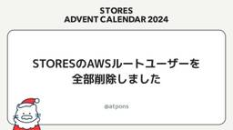
STORESのAWSルートユーザーを全部削除しました 33 STORES Product Blog
STORES Product Blog
STORES 技術基盤グループの id:atpons です。普段は STORES 全体のパブリッククラウドや開発で利用している SaaS の管理をしています。今回は STORES で管理している AWS Organizations のメンバーアカウントのルートユーザーを全部削除したので、進め方について書いていきます。 この記事は STORES Product Blog Advent Calendar 2024 11日目 の記事です。 はじめに STORES では、プロダクトの開発や運用に AWS を採用しています。その上で、AWS Organizations を導入しており、各アカウントへのロ…
4日前
ts-jestからSWCへの移行で発生するイミュータブル性と型チェックの問題について 7 Tabelog Tech Blog
この記事は 食べログアドベントカレンダー2024 の18日目の記事です🎅🎄 はじめまして。食べログ開発本部ウェブ開発2部FEチームの中内です。 本記事では、食べログノートで使用しているJestのトランスパイラをts-jestからSWCに移行した際、既存のテストが動作しなくなる問題と型チェックについて解説します。 食べログノートとは 2023年2月に本格展開を開始した予約管理台帳です。 食べログでネット予約をご契約いただいている店舗向けのオンライン予約台帳サービスで、電話予約や各種グルメメディアのネット予約を一元管理することで、紙台帳よりも手間なく管理することができます。 詳しくはこちらをご覧く…
2日前
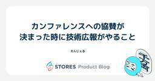
カンファレンスへの参加・協賛が決まった時に技術広報がやること 7 STORES Product Blog
こんにちは、技術広報のえんじぇるです。 この記事は技術広報アドベントカレンダー17日目の記事です。 技術広報として、欠かせない業務のひとつ、カンファレンスへの参加・協賛が決まった時にやっていることを紹介します。 お金 カンファレンスの参加・協賛に欠かせないのがお金です。 カンファレンス協賛のためのお金ですが、年間の計画を立てて予算をとっています。 計画策定時には昨年度の実績を参考にするため、協賛費用の変更があった場合にはひと慌てありますが、どうにかやりくりしています。 次に参加費用です。STORES では、カンファレンスに参加するための制度『Canサポ』があります。 仕事をより効果的に行うため…
3日前
DatadogとGitHub Actionsを使ってバグが混入したデプロイを一瞬で見破れるようにする方法 4 LIVESENSE ENGINEER BLOG
LIVESENSE ENGINEER BLOG
これは Livesense Advent Calendar 2024 DAY 19 の記事です。 はじめに 本記事で行わないこと 実装しようと思った背景 実装手順 タスク定義にバージョンタグを追加 GitHub Actionsからコミットハッシュをtask定義ファイルに渡す 実装結果 最後に 参考にした記事 はじめに 株式会社リブセンスに内定者インターンとして参加している小野です。 本記事では、Datadogを活用してアプリケーションのバージョントラッキングを実装する方法について解説します。 アプリケーション開発の過程でバージョン管理を行うことには、以下のようなメリットが存在します。 バージョ…
1日前
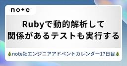
Rubyで動的解析して、関係があるテストも実行する 13 noteエンジニアチーム 公式マガジン
noteエンジニアチーム 公式マガジン
この記事は note株式会社 Advent Calendar 2024 の17日目の記事です。あるRubyクラスを変更したがそのプログラムのテストケースの実行結果の確認だけでは不十分なことがよくある。例えば、CreateUserService -> Userのようなクラスの依存関係があったとする。プログラマはUserクラスに対して変更を加えたので、Userクラスに対するテストケースを実行すれば確認としては十分であると考えた。しかし、実際にはUserクラス単体ではCreateUserServiceからの実際の利用のされ方は確認できないし、保証もできないので（特にRubyプログラムであることも踏まえて）、うっかりUserクラスの振る舞いが変わってしまったことで、連鎖的にCreateUserServiceの振る舞いに影響してしまうということがよくある。この問題には、以下のような解決策が考えられる。続きをみる
3日前
GitHub ActionsとAWX Operatorで実現するGitOpsによるリリース自動化 - 後編 - 13 ZOZO TECH BLOG
ZOZO TECH BLOG
はじめに こんにちは、EC基盤開発本部SRE部カート決済SREブロックの金田・小松です。普段はSREとしてZOZOTOWNのカート決済機能のリプレイスや運用を担当し、AWSやAkamaiの管理者としても活動しています。 前編では、手動リリース作業が抱える課題を解決するために、GitHub Actionsを活用したリリースプロセス自動化の概要について解説しました。GitHub Actionsによる変更検知、ジョブ制御、結果通知の仕組みを構築することで、手作業の工数削減と安定性向上を実現する一連のフローをご紹介しました。 techblog.zozo.com 後編では、GitHub Actionsと…
4日前
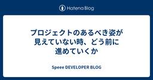
プロジェクトのあるべき姿が見えていない時、どう前に進めていくか 12 Speee DEVELOPER BLOG
はじめに 不動産業界向けの新規プロダクトを開発している篠島です。新卒で入社してから9ヶ月が経ちました。Speeeに入社するまでは、個人でアプリやサイトをリリースしながら技術を学んできましたが、実際に開発現場に入ってみると、開発チームだけでは解決できない、あるいは気づくことすら難しい問題が多く存在することを痛感しました。 そうした中で、プロダクトの課題解決に向き合うプロダクトマネージャー（以下、PdM）の行動を間近で見る機会を得たことは、私にとって非常に大きな学びとなりました。特に、課題やステークホルダーが複雑で、「こうあるべき」という理想の姿がまだ明確になっていない状況下での対応力に感銘を受け…
4日前
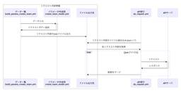
runnを用いたバックエンドテストの試行錯誤の変遷とこれから 44 freee Developers Hub
freee Developers Hub
こんにちは。2023年のQA Advent Calendarを見てfreeeのQAに興味を持ち、転職。そして本年のAdvent Calendarの内の1日を担当することになりました。決済プロダクトのQAエンジニアのsunnyです。 チームではアジャイルQAのスタイルを採用しており、要求・要件定義からユーザーストーリーを作成し、開発者とやりとりしながら仕様の理解を深めつつ、テスト分析・設計を行っています。 本記事はバックエンドQAで実践してきた、runnというツールを用いた変遷と、その先の展望についてのお話です。 この記事はfreee QA Advent Calendar 2024 - Adve…
5日前
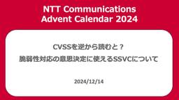
CVSSを逆から読むと？脆弱性対応の意思決定に使えるSSVCについて 38 NTT Communications Engineers' Blog
この記事は、 NTT Communications Advent Calendar 2024 14日目の記事です。 脆弱性対応の分野で注目度が高まりつつあるSSVCの概要と、その運用方法について紹介します。 脆弱性対応の課題 公開される脆弱性の増加 実際に悪用される脆弱性は一部に過ぎない 脆弱性の悪用までが高速化 CVSSによる脆弱性のトリアージ SSVCとは SSVCを構成する要素 ステークホルダーのロールの特定 決定すべき優先度（Decision）の特定 Decisionが取りうる値（Outcome）の定義 Outcomeの算出に使う入力の決定（Decision Points） Outco…
6日前
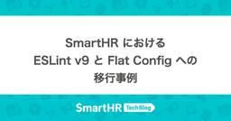
SmartHR における、ESLint v9 と Flat Config への移行事例 3 SmartHR Tech Blog
本記事は、SmartHR Advent Calendar 2024 シリーズ 1 の 19 日目の記事です。 こんにちは。SmartHR プロダクトエンジニアの sasaki (@s_sasaki_0529) です。 この記事では、SmartHR が共通で利用する ESLint の設定パッケージを、ESLint v9 と Flat Config に対応させた取り組みを紹介します。 ESLint とは ESLint は、JavaScript や TypeScript を中心に幅広く使われている静的解析ツール（Linter）です。コード品質やスタイルの不整合を自動検出し、大規模なプロジェクトや、多…
1日前

SpaceXのロケット技術を、自作シミュレーターで解説する 3 ABEJA Tech Blog
私が紹介したいのはSpaceXの根幹をなすロケットの制御技術についてである。技術紹介をするためにシミュレーターを自作し手動と自動制御で着陸の難しさを体感してもらおう。
1日前
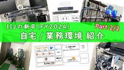
IIJのFY2024 新卒の自宅 / 業務環境紹介 Part 2 3 IIJ Engineers Blog
【IIJ 2024 TECHアドベントカレンダー 12/19の記事です】 はじめまして、小椋といいます。今年度 (2024年) に入社し、IIJ のクラウドサービス「IIJ GIO」の基盤周りを担当し...
1日前

Stanで動かすベイズ的機械学習 ~医療費データの分析例~ 3 ENGINEERING BLOG ドコモ開発者ブログ
ENGINEERING BLOG ドコモ開発者ブログ
本記事は、ドコモアドベントカレンダー2024 19日目の記事です🎄 こんにちは！NTTドコモ クロステック開発部の畑元です。業務ではヘルスケア領域におけるデータ分析やAI開発を行っています。 この記事ではベイズ推論による機械学習とRStanを用いた分析例をご紹介します。データサイエンス分野の方には馴染みのある話かもしれませんが、私はよく忘れてしまうので頭の整理も兼ねて書いていこうと思います。 ※数式が崩れる方は、数式の上で右クリックして、Math Settings > Math Renderer > Common HTMLへ設定をご変更ください 1. はじめに 2. ベイズ推論について ベイズ…
1日前
フル出社からフルリモートになった話 3 BABY JOB テックブログのフィード
!この記事は BABY JOB Advent Calendar 2024 の 19日目の記事です。 はじめに私はBABY JOBに参画して約３ヶ月の新米社員で、地方在住でのフルリモートで勤務しています。今回が初めての転職で、前職でも同じくWebサービスを開発していましたが、フル出社でした。勤務形態の変化と、変化を通して見えてきたこと、感じたことについて共有します。フルリモートを経験していない読者の参考になれば幸いです。 入社前の開発体制前職ではいわゆるウォーターフォール開発を行っていました。５〜６人ほどのチームで毎日朝夕のミーティングを対面で行い、毎週金曜日に全体...
1日前
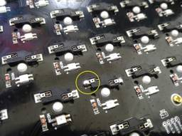
Javaバッチのクラウド移行プロジェクトの泥臭い挑戦 3 エムスリーテックブログ
この記事はエムスリー Advent Calendar 2024 の18日目の記事です。 こんにちは、基盤チームエンジニアの桑原です。最近はKeychron Q11を購入してキーボードライフを楽しんでいます。昨日はキースイッチの交換に失敗し、10年ぶりにはんだ付けをして何とか事なきを得ました。 はんだ付けしたら巨大な鉛の塊ができてしまったの図 本日は私が半期取り組んでいたJavaバッチのオンプレからクラウドリフトプロジェクトについて紹介します。なかなか泥臭い作業が多かったのですが、ありのままの仕事内容をお伝えします。 概要 システムの概要 プロジェクトの概要 プロジェクトの背景 脱オンプレを進め…
2日前
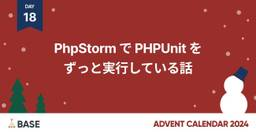
PhpStorm で PHPUnit をずっと実行している話 3 BASEプロダクトチームブログ
この記事はBASEアドベントカレンダー2024の18日目の記事です。18日目は shota.imazeki さんの記事（INFORMATION_SCHEMAを用いたBigQueryデータ監視 - BASEプロダクトチームブログ）も公開されていますので、ぜひご一緒に読んでみてください。 はじめに こんにちは、はじめまして。BASE の Feature Dev1 Group でバックエンドエンジニアをしている @meihei です。 2024年6月に入社してから半年が経ち、この間に多くの経験を積ませていただきました。 この記事では、私の日常の開発業務、特にローカル環境で PHPUnit を自動的・…
2日前
検索エンジニアとして入社して1年でやったこと 3 10X Product Blog
この記事は10Xアドベントカレンダー2024の18日目の記事になります。 昨日はJOJOさん(@joj0hq)が「10Xのエンジニアとして入社から2年目を振り返る」という記事を公開しているので、そちらもぜひご覧ください。 はじめに 取り組んだプロジェクト 類似商品検索の実装 新しい検索精度モニタリングの導入 トップ画面での推薦枠A/Bテスト アルゴリズム アーキテクチャ 検索系RPCのレイテンシ改善 ボトルネック 効果 Elasticsearchのバージョンアップ 課題 互換性の調査 リリース手順 バージョンアップによるパフォーマンス改善 これからの取り組み LLMの活用 リランキング おわり…
2日前
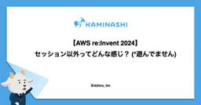
【AWS re:Invent 2024】セッション以外ってどんな感じ？ (*遊んでません) 10 カミナシ エンジニアブログ
こんにちは、「カミナシ 従業員」開発チームの a2 (@Atsuhiro_tim) です。 re:Invent については、弊社含め多くの企業のセッションレポートを目にしていることと思います。 re:Invent は新サービス発表のある基調講演や、実際に手を動かしてサービスを触れるセッションへの参加などがメインコンテンツですが、ラスベガスに一週間滞在する間、それらが全てではありません。異国に行くこと自体や、セッション以外にも面白いアクティビティなどがあります。 今回は、そういったセッション以外の側面にスポットを当ててみたいと思います。ゆるい記事なので、すきま時間に読んでいただければと思います。…
4日前
Amazon Bedrock の新モデル Amazon Nova の精度を確認してみた 10 Taste of Tech Topics
はじめに 急に冬らしい寒さを感じるようになってきました。 データ分析エンジニアの木介です。Amazon Bedrock Advent Calendar 2024 シリーズ２の16日目のブログ記事になります。qiita.com今回は12月のAWS re:Invent 2024にて発表のあったAWSの最新LLMモデルAmazon Novaを触っていきたいと思います。www.aboutamazon.com はじめに 概要 Novaとは Novaで出来ること 使い方 他モデルとの比較 Amazon Nova の精度を確認してみる 1.特殊な日本語の理解 2.画像認識 3.画像生成 4.動画生成 まとめ…
4日前
freeeのプロダクト価値を最大化させるPdL（プロダクトリード）ってなんだ！ 5 freee Developers Hub
こんにちは。 この記事は freee Developers Advent Calendar 2024 - Adventar 18日目の記事です。 adventar.org 担当するのは債権と請求書ドメインでPdL（プロダクトリード）をしているJumpです。以後お見知り置きを！ 今日はfreeeのロールモデルのひとつであるPdLとはなにか、何をしているのかの一例を紹介しようと思います。 そもそもPdL（プロダクトリード）って何？ 理想のユーザー価値を実現するリード人材でfreee の名称では PdL、プロダクトリードと呼んでいます。 ここ数年で生まれた出来立てほやほやのロールモデルです。 PdM…
2日前
SQLマスターへの道 (INNER JOIN、LEFT JOINでのデータ集計) 23 iimon TECH BLOG
はじめに 結合とはなに？？ 内部結合 外部結合 それぞれのメリットと適しているケース 内部結合のメリット 内部結合のデメリット 内部結合を選ぶべきケース 外部結合のメリット 外部結合のデメリット 外部結合を選ぶべきケース 基本構文 実際に使ってみた 注意すべき点 実際に結合したテーブルからデータを集計する(内部結合) 実際に結合したテーブルからデータを集計する(外部結合) 最後に 参考 はじめに こんにちは、株式会社iimonでフロントエンドエンジニアを担当している「たーくん、たー坊」です♪ 本記事はアドベントカレンダー15日目の記事になります。 フロントエンジニアながらサービスの運用・保守を…
5日前
レポートシステムの安定稼働に向けた取り組み 9 BASEプロダクトチームブログ
この記事は BASE アドベントカレンダー 16日目の記事です。 はじめに こんにちは、CSE Group ※1 で社内の業務効率化の開発をしている上野です。 アドベントカレンダー15日目は @miyachin_87 さんの記事でした、みなさんもうお読みでしょうか？私は特に業務効率化の開発をしているので Notion での自動タスク生成の話はとても参考になりました。まだの方はぜひお読みください！ devblog.thebase.in さて、アドベントカレンダー16日目の本日は、レポートシステムの安定稼働をするための取り組みについて紹介します！ レポートシステムとは BASEではJ-SOX対応の…
4日前
【プロヒス2024】LayerX&Nealleのセッションに寄せられた全ての質問に答えまくります！ 21 Nealle Developer's Blog
この記事はニーリーアドベントカレンダー2024の16日目 その1の記事です。 こんにちは。ニーリーのCTOの三宅（@katzhide）です。 先日、YOUTRUST社主催の大規模カンファレンス「プロダクトヒストリーカンファレンス2024」が開催され、ニーリーはスポンサーとして、LayerXさん(のVPoE 髙橋さん)と「事業成長を爆速で進めてきたプロダクトエンジニアたちの成功談・失敗談」というタイトルで登壇をさせていただきました！当日ご来場いただいた方、オンライン視聴をしていただいた方、ありがとうございました。 lp-a.youtrust.jp トーク主体のセッションだったので、モデレーターを…
4日前
生成AI業務活用プロジェクトの立ち上げを成功に導く三種の神器 33 Tabelog Tech Blog
この記事は 食べログアドベントカレンダー2024 の14日目の記事です🎅🎄 食べログ開発本部 技術部 データサイエンスチームのテックリードをしております富田です。 私は生成AI活用を推進するチーム内のユニットリーダーも兼任しており、私の専門性を活かしたトピックとして生成AI業務活用プロジェクトの立ち上げについての話を書こうと思います。 なぜ業務活用に取り組んでいるのか まず、生成AI業務活用とは何かについて説明します。 生成AI業務活用は、データサイエンスチームで進めている推進トピックの1つです。 データサイエンスチームは食べログのデータとAIの活用を推進するチームであり、データ基盤とAI基盤…
6日前

モノリスの運用課題を解決するためにコードオーナーをSentryとDatadogに送る 29 Timee Product Team Blog
Timee Product Team Blog
モノリス特有の運用課題 こんにちは。バックエンドエンジニアの須貝です。 タイミーのバックエンドAPIはモノリスなRuby on Railsアプリケーションです。2024年12月現在、このリポジトリ上で10程度のチームが開発しています。 モノリスは利点も多いのですが、チームが増加するにつれて運用面でモノリス特有の難しさを感じることも増えてきました。例えば、SentryやDatadogで何かエラーや問題を検知しても「これはどこのチームの持ち物なのか」という責任があいまいになってしまい改善がなかなか進まない、基盤的なチームがエラーのトリアージをするにしても調査の負担が大きい、といった課題がありました…
6日前
SLI/SLOの設定を進めるその前に、アラート品質の改善に取り組んだ話 28 BASEプロダクトチームブログ
本記事はBASEアドベントカレンダー2024の14日目の記事です。 はじめに BASE の Product Dev Division でエンジニアリングマネージャー（EM）をしている @tanden です。 Product Dev Division では、ここ 1 年ほどサービスレベルマネジメントの取り組みを有志メンバーを中心としたチームで進めてきました。この記事では、サービスレベルマネジメントの取り組みの一貫として行ったアラート品質改善についてまとめています。 SLI/SLO設定のその前に サービスレベルマネジメント（SLM）というと SLI/SLO について最初に思い浮かぶ方も多いのではな…
6日前
MLflow を Vertex AI Experiments に置き換えられるってホント？ 17 NTT Communications Engineers' Blog
この記事では、NTT Communications Advent Calendar 2024 16 日目の記事です。本記事では MLflow という実験管理 OSS を Google Cloud の Vertex AI Experiments に置き換えを検討してみた話について記載しています。 はじめに 結論 話題の中心となる実験管理機能 浮き彫りになった課題 パフォーマンス面 セキュリティ面 Vertex AI Experiments によるアプローチ 検討の中でぶち当たった壁 前提知識の整理 テスト実行のメタデータの扱い方 API コールの上限 考察と今後 さいごに はじめに こんにちは、…
4日前
Ruby のコードから TypeScript のコードを生成する 7 freee Developers Hub
この記事は freee Developers Advent Calendar 2024 の 16 日目の記事です. freee でエンジニア兼 Dev Branding をやっているけむりだま (@_kemuridama) です. 今年は Apple Vision Pro を購入したのですが, 予約したことを X に投稿したらフジテレビに開封時の取材を申し込まれるというレアなイベントが発生しました. 先日公開された visionOS 2.2 から導入された Mac仮想ディスプレイ機能のウルトラワイド対応, 家で開発してるときにとても便利なので会社でも使えないかなーと願っています. (社用 PC…
4日前
GitHub ActionsとAWX Operatorで実現するGitOpsによるリリース自動化 - 前編 - 7 ZOZO TECH BLOG
はじめに こんにちは、EC基盤開発本部SRE部カート決済SREブロックの金田・小松です。普段はSREとしてZOZOTOWNのカート決済機能のリプレイスや運用を担当し、AWSやAkamaiの管理者としても活動しています。 本記事では、前編と後編に分けて、Classic ASPの手動リリースをGitHub ActionsとAWX Operatorを活用して自動化したプロジェクトについてご紹介します。手動で行っていたリリース手順を自動化することで、効率化と安定性をどのように実現したか、そのアプローチをお伝えします。 前編では、Classic ASPの手動リリース作業が抱える課題を解決するためにGit…
4日前
Python アプリケーションのパフォーマンス調査に便利な Cloud Profiler の結果を見るコツ 26 GO Tech Blog
GO Tech Blog
この記事はGO Inc. Advent Calendar 2024 14日目の記事です。 こんにちは。AI技術開発部の牧瀬です。 Python アプリケーションのパフォーマンスチューニングに使えるプロファイラはいくつかありますが、本番環境でも使えるものとして Google Cloud Profiler があります。 本記事では様々なサンプルコードで Cloud Profiler の挙動を確認し、結果の読み方について注意点やコツをお伝えします。 概要 Google Cloud では Cloud Profiler というものが提供されており、 Go, Python, Java, Node.js な…
6日前
Elastic CloudでObservabilityを簡単に始める 2024年版 26 Taste of Tech Topics
Elastic Cloudを利用してAWSのリソース・メトリック監視／ログ監視／死活監視(Observability)を簡単に始める方法について手順ベースで紹介します。
7日前
レスポンスが文字化けしたのでエンコードについて調べた 26 iimon TECH BLOG
はじめに こんにちは！株式会社iimonでフロントエンドエンジニアをしているかとうです！ 本記事はiimonアドベントカレンダー13日目の記事となります！✨ サーバーから送信されたデータがShift_JISでエンコードされている場合、そのままだとJavaScriptで扱えないことがありました。 そこで、本記事では以下の内容についてお話しします！ エンコードについて レスポンスがShift_JISレスポンス形式の場合のデコード方法 JavaScriptエンコード/デコードメソッド はじめに エンコードを理解する エンコードとは 文字コード 文字コード規格 ASCII Unicode エンコーディ…
7日前
ヘッダーを固定した縦横スクロールを実装する 25 iimon TECH BLOG
はじめに こんにちは、株式会社iimonでフロントエンドエンジニアをしている木村です。本記事はアドベントカレンダー14日目の記事になります！cssって奥が深いですよね。勉強した気になっても自分の思い通りに一発でなってくれたことがありません。そんな中で、以前いつにも増して詰まった実装がありました。「スクロールバーを縦と横に常時表示する」というものです。入社して１ヶ月経たないぐらいに取り組んだこの実装、あまり理解できずに実装していた部分も大きいです。入社して半年と少し経った今なら、もっとちがう方法で、ちゃんと理解して実装できるんじゃないかとこの記事を書いてみました。まだまだ勉強中のため、間違い等あ…
6日前
Rails で挑むイベントソーシングと補償トランザクション: ローコードプラットフォームでの事例 25 ROUTE06 Tech Blog
ROUTE06 Tech Blog
データベーススキーマを動的に操り、ユーザが持ち込んだ BYODB（Bring Your Own Database）のデータベースとも連携する——こうした特殊な要件に直面したローコードプラットフォームの開発現場で辿り着いた解決策はイベントソーシングと補償トランザクションでした。 本記事では、Ruby on Rails アプリケーションでタイトルのアーキテクチャパターンを実践し、複雑な分散トランザクション問題を乗り越えた手法と、その裏にある思考プロセスをご紹介します。 前半では課題の背景として、ローコードプラットフォームと BYODB 要件がもたらす複雑性を説明します。その後、イベントソーシングや…
7日前
DX組織のエンジニア新卒採用立ち上げからの歩み 15 Insight Edge Tech Blog
Insight Edge HR担当の合田（ごうだ）です。 当社は2019年に“住友商事のDX推進のためのプロフェッショナル集団”として創業し、これまで中途採用100%で採用を進めてきました。なぜ今回新卒採用を開始したのか、その想いや実際の立ち上げから行なってきたことをアウトプットしておきたいと思い、ここにまとめることにします。 当社のように、これから新卒採用を立ち上げる際の採用担当者様の参考にもなれば幸いです！ なぜ新卒採用をするのか 新卒採用プロジェクトタスク一覧 採用ペルソナ策定〜求人票作成 新卒市況感リサーチ 採用目標人数設定 選考フローと評価項目策定〜面接官選出 採用チャネル検討 実際…
4日前
音声入力×AIチャットボットで広がる新たなAI活用の可能性 6 Tabelog Tech Blog
この記事は 食べログアドベントカレンダー2024 の17日目の記事です🎅🎄 こんにちは。食べログ開発本部 ウェブ開発1部 Ownerチームで「食べログ求人」というサービスの開発や、食べログの営業チームが使っている業務系システムの開発を行なっている@itayaです。 今回は今話題のAIチャットボットを音声入力を用いて使うことで感じられた可能性についてお話しさせてもらいます。 音声入力を使おうと思ったきっかけ ある日、いつも通り仕事をしていると、このようなチャットが飛んできました。 私はそれまで、音声入力がスマートフォンの機能などであることは知っていたものの、実際に使ったことはありませんでした。 …
3日前
テストの sharding を効率化する Tenbin というツールを作った 14 サイボウズ フロントエンドのフィード
!この記事は ソフトウェアテスト Advent Calendar 2024 の 15 日目の記事になります。過去のテストの実行時間を利用してテストの sharding を効率化する Tenbin というツールを作りました。https://github.com/nissy-dev/tenbinこの記事では Tenbin が解決する課題と内部実装の詳細について解説します。ツールの使い方などは、リポジトリの README をぜひ読んでもらえればと思います。 Tenbin が解決する課題テストの実行時間を削減するために、CI などではテストを sharding (分割) して実行...
5日前
Aurora MySQL 2から3へのアップグレード - 安全性とコストを考慮した移行プロセス 22 Uzabase for Engineers
Uzabase for Engineers
ソーシャル経済メディア「NewsPicks」SREチームの美濃部です。 NewsPicksでは複数のサービスでAurora MySQLをメインのデータベースとして利用しています。これまでAurora MySQL 2（MySQL 5.7互換）を使用してきましたが、2024年2月から順次クラスタのアップグレードを開始し、2024年11月にすべてのクラスタをAurora MySQL 3（MySQL 8.0互換）へのアップグレードを完了しました。この記事ではそのアップグレードプロセスについて解説します。 アップグレードの背景 アップグレードを決断した主な要因は、Aurora MySQL 2のサポートが…
5日前
Datadog Notebooksを活用した重いリクエスト調査の改善 3 ANDPAD Tech Blog
こんにちは！CREの池田です。ANDPAD Advent Calendar 18日目の本記事では、CREが業務で活用している Datadog Notebooks についてご紹介します。 Datadog Notebooksとは？ Datadog Notebooksは、Datadog内のログイベントやメトリクスをグラフ化し、ノート形式で整理・共有できるツールです。 使い始めたきっかけ CREでは、外形監視の一環としてDatadogを利用しており、今年から異常に重いリクエスト数の集計を自動化しました。この取り組みによって、重いリクエストのデータを効率的に集められるようになりました。 次のステップとし…
2日前
CloudFront Functionsのテストツール「cfft」を導入した 3 READYFORテックブログのフィード
はじめに!こちらは READYFOR Advent Calendar 2024 の18日目の記事です。こんにちは、READYFORでエンジニアをしているshmokmtです。READYFORでは歴史的な背景[1]からLPを様々な構成でホスティングしています。NetlifyCloudFront + S3CloudFront + ALB + Ruby on RailsSTUDIOしかし、近年では非エンジニアが主体となってLPを制作する際のファーストチョイスとして、STUDIO[2]を利用する機会も増えてきました。その結果、REDYFORでは下記の構成でホスティングし...
2日前
【WebGPU】Compute Shader で Curl Noise を計算してパーティクルを動かす 3 KAYAC Engineers' Blog
🎄この記事は【カヤック】面白法人グループ Advent Calendar 2024の18日目の記事です 🎄 こんにちは！ハイパーカジュアルゲームチーム・エンジニアの深澤です。 WebGPU の Compute Shader で Curl Noise を計算し、パーティクルの位置を更新してみました。 スクショは、MacBookPro M1で100万個のパーティクルを動かしたものです。 画像をクリックするとデモに飛びます。 WebGPU で実装しているため、Chromeのみの動作となります。 デモURL: https://takumifukasawa.github.io/webgpu-partic…
2日前
【イベントレポート】「Girls Meet STEM〜ITのお仕事を体験しよう〜」を開催しました！ 3 ZOZO TECH BLOG
【ZOZO TECH BLOG】最新号「【イベントレポート】「Girls Meet STEM〜ITのお仕事を体験しよう〜」を開催しました！」https://techblog.zozo.com/entry/20241215-girls-meet-stem12月15日に開催した、中高生女子向けプログラミング体験会＆トークイベントのレポートを公開します！ #shinfdn #GMS #zozo_engineer
3日前

Repro Tech Meetup #9 – Webパフォーマンス を開催しました 3 Repro Tech Blog
Repro Tech Blog
こんにちは、Repro Booster開発責任者のEdward Fox（edwardkenfox）です。12月13日に開催された Repro Tech Meetup #9 のイベントレポートをお届けします。 今年の3月には「Deep Dive into Browsers」というテーマで開催した Repro Tech Meetup ですが、今回はもう少しテーマを広げ「Webパフォーマンス」という括りにしてみました。テーマの裾野が広くなったことも手伝ってか、前回のイベントと比較すると参加者が倍近くまで増え、約30名の皆さんにご参加いただきました。規模が拡大した一方で、熱量の高い発表や質疑応答が次々…
3日前
ADR 導入・運用時に取り組んだこと 3 CARTA TECH BLOG
はじめに この記事は CARTA アドベントカレンダー2024まとめ - CARTA TECH BLOG の 12/17 の記事です！ はじめまして。株式会社DIGITALIO でエンジニアをしている mittsu です。 私が所属するチームでは今年の7月頃から ADR（Architecture Decision Record）を利用しています。 ADR とは、「アーキテクチャ決定を文書化する最も効果的な方法の1つ」であり、意思決定の背景や理由を明確に残す仕組みを提供します。 「引用元: O'Reilly Japan - ソフトウェアアーキテクチャの基礎」 基本的な ADR の構造は以下の通り…
3日前
Cloud Run jobs を Cloud Deploy でデプロイしてみた 13 Magic Moment Tech Blogさんのフィード
この記事は、Magic Moment Advent Calendar 2024 11日目の記事です。こんにちは、 Magic Moment で QAE をやっている yano です。今年は CI/CD パイプラインを整備することが多かった一年でした。現在パイプラインの中で Cloud Deploy を試験的に採用していますが、リリースノートからも分かるように色々な機能が随時追加されている製品だと感じていますし、single-target のパイプラインは無料で利用できる点がありがたいです。ちなみに1つだけならば multiple-target のパイプラインも無料で利用可能なの...
4日前
プロダクトエンジニアとしての観点を詰め込んだ開発設計書のテンプレートを公開します 12 hacomono TECH BLOG
この記事は hacomono advent calendar 2024 の16日目の記事です こんにちは、hacomonoのプロダクト開発本部のたつ（X）です。僕からはhacomonoの「プロダクトエンジニア」について今回も書かせてもらいます。前回は「プロダクトエンジニア」という役割を定義しましたというお話」という記事の中で、hacomonoのプロダクトエンジニアの定義やそのスキル・マインドについて紹介させていただきました。 さて本日のお話は、そのプロダクトエンジニアの定義や考え方をどのように浸透させていくか、育成していくかという視点からhacomono社内での取り組みの一つである開発設計書の…
4日前
GitHub Actionsのガードを高くする 12 Techouse Developers Blog
Techouse Developers Blog
Techouseに入社して純粋に思ったこととして、「セキュリティ意識が高いなぁ…」と思いました。過去に勤務した経験のあるどの組織よりもセキュリティ意識がしっかりしていると感じました（もちろん近年はセキュリティ意識をより求められているというのもありますので、これまで勤めた組織もセキュリティ意識は向上していっているとは思います）。お客様の情報をはじめとした情報資産の保護について、弊社の情報セキュリティ方針を掲げるだけでなく、しっかり実行していくということに矜持を感じました。そのような組織で働くと、自然と自分自身も同様の視点を持つようになります。そこで今回は、その視点を踏まえたうえでCI/CDに着目し、改善に取り組むことにしました。
5日前
業務ツールでの「おもてなし」をデザインする話 5 JCB Tech Blog
JCB Tech Blog
本稿はJCB Advent Calendar 2024の12月16日の記事です。 こんにちは。デザインチームの関です。 今回はJCB Digital Enablement Platform (JDEP)におけるプロダクトデザインでの試行錯誤をお話しします。デザインチームでは、複数のプロダクトで汎用的に使えるUIパーツやガイドラインを定義したデザインシステムを構築しました。私はこのシステムを広めるべく、クレジットカードの業務ツールの画面から順次適用しています。 デザインシステム構築の取り組み記事もぜひご覧ください。 JCBがゼロから始めたデザインシステム構築 JCBにおける業務ツールとは、例えば…
4日前

fincode byGMOで新規プロダクトのプラン別決済機能を実装しました 10 GMO Developers
fincode byGMOとは GMOイプシロン株式会社が提供する決済サービスです。https://www.fincode.jp/ 「エンジニアファーストの設計、洗練されたUXで最高の開発体験を」という言葉通り、エンジニ […]
4日前
リサーチプロダクトチームがここ最近やってることをざっくり紹介するぜ 4 エムスリーテックブログ
こんにちは、エムスリーエンジニアリンググループ/ BIR(Business Intelligence and Research) チーム の遠藤(@en_ken)です。 BIRはアンケートシステムをはじめとするリサーチプロダクトを開発しているチームです。チームの詳しい紹介は次の資料を読んでいただければと思います。 speakerdeck.com ここ1年ほどでチームの様相は様変わりしました。 一時期エンジニア3,4名ほどしかいなかったチーム状況から現在はエンジニアだけでも9名まで増え、PdMが2名参画したことで開発状況もこれまで以上に活況になってきています。開発スタイルも個人開発に近かったもの…
4日前
障害に立ち向かう！QAエンジニアの1年間のアクション 3 freee Developers Hub
こんにちは。QAエンジニアをしているtoyopiです。 フリー以外のサービスと連携するプロダクトの一員としてQAをしています。 freee QA Advent Calendar2024 17日目です。 去年に引き続きアドベントカレンダーを執筆しております!! developers.freee.co.jp はじめに 約1年前、私は今の開発チームに配属されました。 悲しいことに、このチームは社内で1、2位を争うほど障害（※）が多いチームです…。 このチームが開発するプロダクトで起きる障害の中には、外部連携先に依存する原因もありなかなか一筋縄ではいかない現状です。 そうは言っても、ユーザーにとっては…
3日前
DatadogのDatabase Monitoringを使って非効率なSQLを見つける話 3 asoview! Tech Blog
はじめに こちらの記事は、アソビュー！ Advent Calendar 2024の17日目（裏面）です。 アソビューでSREを担当している鈴木です。 SREの大切なミッションの一つに可用性を保証するというミッションがあります。その可用性をすこしでも向上させるためにDatadogのDatabase Monitoringという機能を使って、改善した話を書きたいと思います。 SREという役割の大事なミッションの一つとして、障害の種を検出してそれを除去していくという活動を日々行うというものがあります。 これは、一般的な世界でわかりやすい例で例えるならば、健康診断などで病気を早期発見して、より長く健康状…
3日前
査定依頼のマッチングシミュレーションをチーム開発で作成した話 7 Speee DEVELOPER BLOG
※この記事は、2024 Speee Advent Calendar15日目の記事です。 昨日の記事はこちら tech.speee.jp 2024年に新卒としてSpeeeに入社しました、中島です。すまいステップというサービスのエンジニアとして開発にあたっています。今回は、査定依頼のマッチングシミュレーションをチーム開発で作っていく過程で得た学びを書こうと思います。チームでの開発経験がまだなくこれから始めるという方に、チーム開発はこういうものだというイメージをつけていただけるとありがたいです。 マッチングとは すまいステップのマッチング すまいステップは、不動産会社が設定した条件に基づき、家を売り…
5日前
NeurIPS2024が開催中なので、エムスリー AI・機械学習チームの推し論文を勝手に紹介するぜ！ 10 エムスリーテックブログ
こんにちは。エンジニアリンググループのAI・機械学習チームに所属している鴨田 です。 このブログはエムスリーアドベントカレンダー14日目の記事です。 弊チームでは毎週1時間の技術共有会を実施しており、各自が担当するプロダクトの技術や、最近読んだ論文を紹介しています。今週はNeurIPS2024が開催されていることもあり、同学会の論文読み会となりました。1セッション1名の担当で、各自がセッション内で気になった論文の詳細を解説します。本ブログではその一部として、セッションごとの「推し論文」を紹介します。 DALL-E 3で生成した「機械学習エンジニアが勉強会でお気に入りの記事について楽しそうに雑談…
6日前

Ruby 3.4.0のcsv/fiddle/rexml/stringio/strscan/test-unit 6 ククログ
ククログ
Rubyの開発に参加している須藤です。そろそろRuby 3.4.0がリリースされるので私がメンテナンスしているdefault gem/bundled gemの変更点を簡単に紹介します。対象gem紹介するgemは次の通りです。default gemがRubyに組み込まれているgemで、bundled gemがRubyをインストールするときに普通のgemとしてついでにインストールされるgemです。どちらも新しいバージョンを普通のgemとしてインストールすることで、Ruby本体のバージョンを上げなくても新しいバージョンのgemを使えるようになります。csv: bundled gemfiddle: default gemrexml: bundled gemstringio: default gemstrscan: default gemtest-unit: bundled gemcsvcsv gemはCSVを扱うgemです。csv gemの変更点はこんな感じです。GH-2963つの条件が重なったときにパースに失敗する「ことがある」問題を修正しました。（4つの条件とか言ったほうがいいかもしれない
4日前
OSSなPython製ETLライブラリ「dlt」の紹介 6 株式会社ゆめみのフィード
dbt アドベントカレンダー 2024 11日目の記事です。 前置き普段はdbt Cloudを使っていて、Google Cloud に BigQueryとLookerStudio な技術スタックで社内のデータ基盤を構築・運用しています。データ基盤で扱うSourceの拡充をするため、ETL/ELT ツールをいくつも試してたどり着いたのが、dltというツールです。世間では非エンジニアでも画面上でポチポチ設定をしていくだけで、簡単にELT パイプラインが構築できるサービスを使われている話をよく聞きます。エンジニアのいない組織でも、すぐに各種データを収集して分析を始められる点では重宝さ...
4日前
振り返りで失敗を良質な失敗に変え、成果に繋げた話 8 Speee DEVELOPER BLOG
※この記事は、2024 Speee Advent Calendar13日目の記事です。 昨日の記事はこちら tech.speee.jp はじめに こんにちは、2024年新卒で株式会社Speeeに入社し、現在すまいステップ（すまステ）という、不動産売却マッチングプラットフォームの開発チームでエンジニアをしている渋谷と申します。 今回は、新卒エンジニアとして挑戦・失敗を繰り返す中で、自分がどうやって自身の問題に向き合い、思考・行動を変化させ、成果に繋げてきたかをお話しできればと思います。新卒エンジニアとしてこれから開発に携わっていくが、経験を成果に繋げられるか不安な方にとって、少しでも参考になれば…
7日前
モックサーバ WireMockについて 5 asken テックブログ
asken テックブログ
この記事は、株式会社asken (あすけん) Advent Calendar 2024 の16日目の記事です。 こんにちは、askenの入江です。 今回は、外部APIのモックサーバーとして非常に便利な「WireMock」の使い方をご紹介します。 開発でのよくある課題 現代の開発プロジェクトでは、外部APIや外部システムとの連携が欠かせません。しかし、これらの外部システムを利用する際に、次のような問題が発生することがあります。 テストケースの多様性: 外部システムの動作やユーザの過去の操作に合わせて応答パターンを再現するのが難しい。 外部依存の影響: 外部システムがダウンしていると、開発やテスト…
4日前
趣味のゲーム制作で気づいたこと 7 Tabelog Tech Blog
この記事は 食べログアドベントカレンダー2024 の15日目の記事です🎄 はじめに（なぜゲーム制作を？） こんにちは。食べログWEBエンジニアの@yabon_exeです。 本記事の大まかな主張を最初にざっくり言うと、「AIはもっと気軽に使っていいんじゃないか？」になります。 食べログで働くようになって、「カカクコムには、多種多様な趣味をお持ちのエンジニアの方が多いな」と感じることが多いです。定期的に開催される勉強会での新入社員の自己紹介では「こんな面白いことを、いつもしているのか！」と驚かされることもあります。 私自身も子供の頃からゲームが好きで、それが高じて大学から自作ゲームの開発を趣味とし…
5日前
TimesFM vs Prophet vs SARIMA | 最強の時系列モデルは誰だ！？ 7 GMO Developers
はじめに 時系列モデルとは、時間の経過とともに変化するデータを扱うための統計モデルや機械学習モデルです。これらのモデルは、過去のデータパターンを活用して将来の値を予測したり、データの傾向や季節性を分析するために使用されま […]
6日前
入社3ヶ月で感じたアンドパッドの開発のしやすさを支える仕組みや環境 6
ANDPAD Tech Blog
この記事は ANDPAD Advent Calendar 2024 の14日目の記事になります。 こんにちは、今年の9月に入社してANDPAD施工管理の開発をしている中山です。 最近はkeyball44という自作キーボードを作成して、keymapをいじったり、自分に合ったテンティングの角度を模索したりと日々楽しんでいます。 このまま自作キーボードの話をしたいですが、それはまたの機会に取っておこうと思います。 転職をすると今まで経験したことのない開発の仕組みや環境との良い出会いがあると思います。 そこで、私がアンドパッドに入社して3ヶ月で出会ったそれらをいくつか紹介していきたいと思います。 日が…
6日前
【pmconf 2024】クライス&カンパニーのDiscord企画振り返り：プロダクトマネージャーにとってのホームランとは？ 5 エムスリーテックブログ
こんにちは、こんばんは。今年も年末年始は12/25〜1/5まで連休を取ってみた取締役CTO兼VPoPの山崎です。最近はUL装備*1を充実させる日々を過ごしております。 本ブログはプロダクトマネージャー Advent Calendar 2024の14日目の記事です*2。 プロダクトマネージャー Advent Calendar 2023は乗り遅れて枠を取れなかったのですが、その前のプロダクトマネージャー Advent Calendar 2022には以下の記事をポストしていますので、是非ごらんください。 www.m3tech.blog 先日のUL装備キャンプ。Enlightened Equipmen…
7日前
PM定例のアジェンダ公開 5 SmartHR Tech Blog
こんにちは、PMのgackeyです！いまは、スマートフォンアプリと、とある新規プロダクトのPMを担当しています。 流行語大賞が決まり、pmconfが幕をおろし、M-1の決勝出場者が選ばれ、2024年ももう終わろうとしています。何か、今年一年のSmartHRのPM活動を振り返る記事を！ということで、「PM定例」について振り返ってみることにしました。 PM定例といえば、ちょうど先日のpmconf2024でも、スマートバンクの湯川さんが発表されていましたね。「よいPM定例はPM組織を強くする 〜 共有から共創へ、悩みを共に解決する場づくり 〜」です。タイトルから共感しっぱなしだったくらい、私たちSm…
7日前
1つのフォーム内で複数の送信ボタンを扱う 5 asoview! Tech Blog
はじめに この記事はアソビュー！ Advent Calendar 2024 の13日目（裏面）です。 こんにちは、アソビューでフロントエンドエンジニアをしている村井です。皆さんは、1つのフォームの中で2つの送信ボタンを扱ったことはありますか？ 複数の送信ボタン配置時に押されたボタンを判別したい 私が担当する開発において、同じ入力項目を使って「検索」と「CSVダウンロード」の2つの機能を実装することで、ユーザーが手間なく必要な情報を取得できるようにする必要がありました。 しかし、1つのフォームに複数の送信ボタンを配置すると、どのボタンが押下されたのかを判別する必要があります。 ボタンの区別ができ…
7日前
今日から使いたくなるXcodeの便利機能 3 Livesense Engineersのフィード
これは Livesense Advent Calendar 2024 DAY 16 の記事です。リブセンスでマッハバイトのiOSエンジニアをしている伊原です。iOSアプリの開発をしていると1日の中でXcodeに触れている時間が長くなりがちです。そこで今回は、私がXcodeを長時間快適に使用する上で工夫していることをまとめてみました。 実行環境Xcode 16.1macOS Sonoma 14.5 ブックマークの活用例Xcode 15からブックマーク機能を使える様になりました。ブックマークの使い方は色々ありますが、私の場合は頻繁に参照・更新するファイルをブックマークで...
4日前
Unity Editorから特定アセットのGitHubファイルリンクをブラウザで開きたい 3 KAYAC Engineers' Blog
Unity Editorから特定アセットのGitHubファイルリンクをブラウザで開くpackageをリリースしました。
4日前
1日1PRのすゝめ 3 JMDC TECH BLOG
JMDC TECH BLOG
この記事は JMDC Advent Calendar 2024 16日目の記事です🌲 15日目は川島さんによる「Redshiftのストアドプロシージャで単体試験自動化をやってみた」でした。 qiita.com 株式会社JMDCでヘルスケアプラットフォームサービス【Pep Up】 のフロントエンドエンジニアをしている新保です。 この秋からPep Up開発チームに「カイゼンチーム」という新しいチームができ、エンジニアに加えてそのチームリーダー的なこともやることになりました。これはPep Upの各種数値を計測し、こまめな改善施策を打ってその影響を計測するという、いわゆるグロースハック的な役割を期待さ…
4日前
きれいな設計を目指したい！ ちょうぜつ ソフトウェア設計入門 3 虎の穴ラボ技術ブログ
虎の穴ラボ技術ブログ
本記事は 虎の穴ラボ Advent Calendar 2024 15日目の予約投稿記事です。 こんにちは、虎の穴ラボの大場です。 今回は「ちょうぜつソフトウェア設計入門 PHPで理解するオブジェクト指向の活用」という書籍について紹介します。 本書の目次を眺めた時にソフトウェア設計の話題に加えて、依存性の注入(DI)に関して取り扱っていた点に惹かれて購入しました。 まだDIの章まで読み進められていないのですが良い本だと感じているので、私が読み進められている範囲で本書を紹介していければと思います。 書籍情報 どんな本か 対象読者について 書籍の構成について 書籍全体の雰囲気 書籍内容 1章 クリー…
5日前
Rails8の素の認証機能にOTPを導入してみた 3 Livesense Engineersのフィード
これは Livesense Advent Calendar 2024 DAY 15 の記事です 概要Rails8 がリリースされたので、新機能を使って二段階認証を実装してみた。 何故やるのかRails8 で DHH 謹製の認証機能が追加された。メールアドレス認証までの機能なので、多段階認証は自分で実装してみて Rails8 のカスタマイズがどこまでできるかの検証をする。DHH からも基本的な認証機能は提供するが、多段階認証までは対応しないというアナウンスがあるので、ＤＩＹの精神で試してみよう。https://github.com/rails/rails/pull/523...
5日前
新卒が進める新卒勉強会 3 KAYAC Engineers' Blog
技術部 フロントエンドエンジニアの村上です。 面白法人グループアドベントカレンダー2025 15日目の記事になります。 今回は、2024年4月にカヤックに入社したフロントエンドエンジニア5名に向けた勉強会を、新卒自身で進めるという取り組みについて書きたいと思います。 背景 入社して半年した頃、エンジニアが2人ずつ自由なテーマで発表する社内勉強会が始まりました。 新卒の自分にとっては知らない技術やテクニックを知る良い機会になっている一方で、ReactやNext.jsなど業務で馴染みのある技術については「基礎的な知識があればもっと発表内容を吸収できるのではないか」と思いました。 また自分の順番が回…
5日前
インシデント対応を標準化するテンプレート活用事例 3 株式会社ログラス テックブログのフィード
!この記事は 株式会社ログラス Productチーム Advent Calendar 2024 のシリーズ 2、14日目 の記事です。 はじめに本記事においてのインシデント対応は、組織において発生したセキュリティインシデントやシステム障害などの事象に対し、影響範囲の調査、復旧作業、お客様への通知などを迅速かつ効果的に対処するためのプロセスや活動を指します。 課題感インシデント対応においてよくある課題として、以下のような声を聞くことがあります。ビジネスサイド作業中に誰が何をやってるか分からないいつ、何が起こったのかを知りたいエンジニアサイド後から振り返...
6日前
輪読会「ドメイン駆動設計をはじめよう」をプロジェクトチームで開催した話 3 BASEプロダクトチームブログ
この記事は BASE アドベントカレンダー 14日目の記事です。 はじめに BASEのProduct Divにてバックエンドエンジニアをしているオリバです。 当該記事では、所属しているチームメンバーで「ドメイン駆動設計をはじめよう」の輪読会を実施したので、印象に残った内容やチーム内で議論したことを紹介しようと思います。 （画像はhttps://www.oreilly.co.jp/books/9784814400737/より引用） 背景と目的 2024年10月29日、私の所属するチームは「かんたん発送（日本郵便連携）App」（以下、かんたん発送App）をリリースしました。（※かんたん発送Appと…
6日前
グローバル開発体制強化に向けた「意識・理解」の壁を越える取り組み 3 LIFULL Creators Blog
LIFULL Creators Blog
こんにちは。LIFULL Tech Vietnam（以下、LFTV）CEOの加藤です。 2023年10月にLFTVのCEOに就任し、早1年が経過しました。 この1年LIFULLグループでは「グローバル開発体制強化」を掲げ、その実現に向け多くの検討と取り組みを繰り返してきました。 そうした活動を繰り返す中で、我々は目指すべきグローバル開発を進めるためには以下の「3つの壁」を超えていくことが重要であるという結論に至りました。 「意識・理解」の壁 「仕組み」の壁 「言語」の壁 今回はその中でも主に「意識・理解」の壁を越えるためにLFTVとして行った取り組みを3つ紹介します。 3つの壁については当社C…
6日前
devise-two-factor によるワンタイムパスワードを使った2要素認証とそのハマりどころ 3 READYFORテックブログのフィード
!この記事は READYFOR Advent Calender 2024 の 13日目です。昨日の記事は @TaketoWakabayashi さんの 誰も不幸にならないデータクレンジングへの挑戦〜多様な顧客データ基盤をいかに整理するか〜, 明日の記事は @KKazane さんです。※ この記事は所属する会社の公式見解ではありません。 ■ この記事のざっくりまとめこの記事では、devise-two-factor のハマりどころ を見ていきながら、devise-two-factor を使って2ステップの2要素認証を導入する際は...Strategies::TwoF...
7日前
OpenAI APIとVertex AIのベクトル検索でお手軽RAG実装 3GMOアドパートナーズ TECH BLOG byGMO
はじめに GMO NIKKOのY-Kです。GCPのVertex AIのベクトル検索を利用してRAGを作ったので軽くまとめてみようと思います。 RAGの応答精度向上のための手法は枚挙に暇がないので、今回は精度を度外視して一
7日前